<!doctype html>
<html lang="en">
<head>
  <meta charset="utf-8">
  <meta name="viewport" content="width=device-width, initial-scale=1">
  <title>arxiv digest — 2026-09-30</title>
  <style>
:root {
  --bg: #ffffff;
  --fg: #1f2328;
  --muted: #59636e;
  --border: #d0d7de;
  --card: #f6f8fa;
  --link: #0969da;
}
body {
  max-width: 980px;
  margin: 0 auto;
  padding: 2rem 1rem 5rem;
  font-family: -apple-system, BlinkMacSystemFont, "Segoe UI", Helvetica, Arial, sans-serif;
  line-height: 1.55;
  color: var(--fg);
  background: var(--bg);
}
a { color: var(--link); }
img { max-width: 100%; height: auto; }
pre, code { background: var(--card); border-radius: 6px; }
pre { padding: 1rem; overflow-x: auto; }
blockquote { border-left: 4px solid var(--border); padding-left: 1rem; color: var(--muted); }
details { margin: 0.6rem 0; }
summary { cursor: pointer; font-weight: 600; }
.paper-figures-scroll {
  display: flex;
  gap: 1rem;
  overflow-x: auto;
  overscroll-behavior-x: contain;
  padding: 0.75rem 0.25rem 1rem;
  margin: 1rem 0 1.25rem;
  border-top: 1px solid var(--border);
  border-bottom: 1px solid var(--border);
  scroll-snap-type: x proximity;
}
.paper-figure-card {
  flex: 0 0 min(260px, 72vw);
  scroll-snap-align: start;
  background: var(--card);
  border: 1px solid var(--border);
  border-radius: 12px;
  padding: 0.55rem;
}
.paper-figure-card img {
  display: block;
  width: 100%;
  max-height: 240px;
  object-fit: contain;
  background: white;
  border-radius: 8px;
}
.paper-figure-caption {
  display: block;
  margin-top: 0.5rem;
  color: var(--muted);
  font-size: 0.85rem;
}
.figure-strip-hint {
  color: var(--muted);
  font-size: 0.9rem;
  margin-bottom: -0.3rem;
}
</style>
  <!-- MathJax: renders $...$ inline math and $$...$$ display math, plus
       \(...\) and \[...\]. Loaded from the official CDN; works offline
       once cached. Configured to skip code/pre blocks so arxiv IDs that
       look like dollar amounts don't get mangled. -->
  <script>
    window.MathJax = {
      tex: {
        inlineMath: [['$', '$'], ['\\(', '\\)']],
        displayMath: [['$$', '$$'], ['\\[', '\\]']],
        processEscapes: true,
        processEnvironments: true
      },
      options: {
        skipHtmlTags: ['script', 'noscript', 'style', 'textarea', 'pre', 'code'],
        ignoreHtmlClass: 'tex2jax_ignore',
        processHtmlClass: 'tex2jax_process'
      }
    };
  </script>
  <script id="MathJax-script" async
    src="https://cdn.jsdelivr.net/npm/mathjax@3/es5/tex-chtml.js"></script>
</head>
<body>
<header style="background-color: #333; color: white; padding: 15px; margin-bottom: 20px;">
  <h1 style="margin: 0; font-size: 24px;">
    <a href="https://ochelpan.github.io/arXiv_clean/" style="color: white; text-decoration: none;">Main</a>
  </h1>
</header>

<h1>Daily arXiv Report</h1>

<hr>
<p>
<a href="index.html">← Index</a>
 · <a href="papers_11.html">← Previous</a> · <a href="papers_13.html">Next →</a>
</p>
<hr>

<h2>Papers 221–240</h2>
<p><a id="paper-2609.34104"></a></p>
<h3 id="subnanoscale-visualization-of-reconstruction-driven-moire-exciton-localization-and-delocalization"><a href="http://arxiv.org/abs/2609.34104v1">(Sub)nanoscale Visualization of Reconstruction-Driven Moiré Exciton Localization and Delocalization</a></h3>
<p><strong>Authors:</strong> Medha Dandu, Sriram Sankar, Giovanny Espitia, Rwik Dutta, Patrick J. Hays, Daria Blach, Takashi Taniguchi, Kenji Watanabe, James R. Chelikowsky, Seth Ariel Tongay, Peter Ercius, Jordan A. Hachtel, Mit H. Naik, Archana Raja, Sandhya Susarla<br>
<strong>Type:</strong> both · <strong>Category:</strong> other · <strong>PDF:</strong> <a href="https://arxiv.org/pdf/2609.34104v1">https://arxiv.org/pdf/2609.34104v1</a><br>
<strong>Analysis basis:</strong> full PDF text, analyzed in chunks
<strong>Topic relevance:</strong> <code>analog quantum simulation</code> <strong>2/5</strong> · <code>interference shaping light</code> <strong>1/5</strong> · <code>quantum measurements</code> <strong>1/5</strong></p>
<div class="figure-strip-hint">↔ Scroll figures horizontally</div>
<div class="paper-figures-scroll">
<figure class="paper-figure-card">
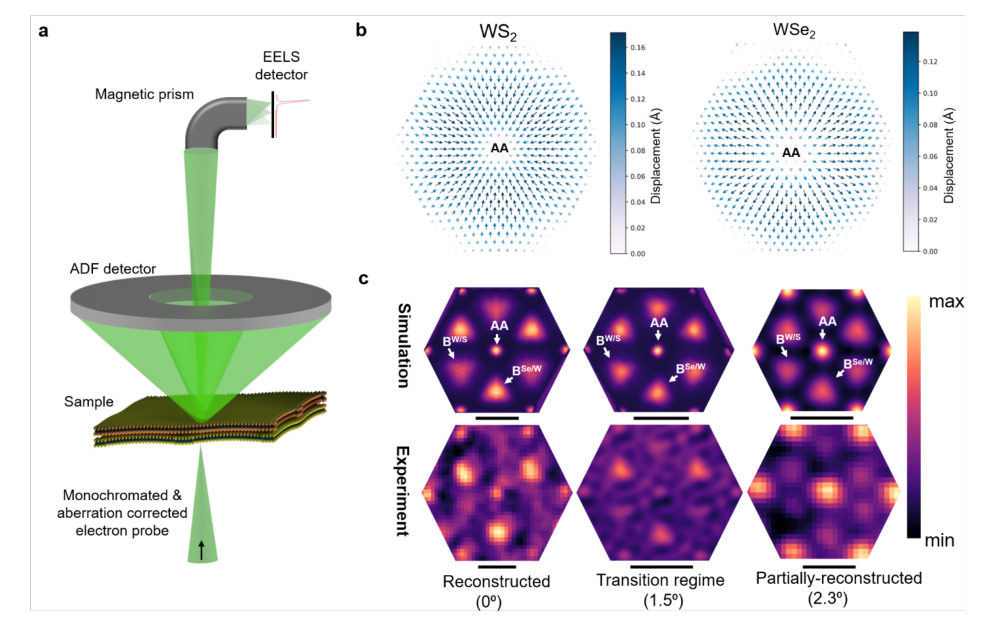
<figcaption class="paper-figure-caption"><b>Fig 1.</b> Figure 1: Structural reconstruction in twisted WSe2/WS2. (a) Schematic of the low-loss STEM- EELS technique. (b) Structural transformation around the AA stacking site in 00 aligned WSe2/WS2</figcaption>
</figure>
<figure class="paper-figure-card">
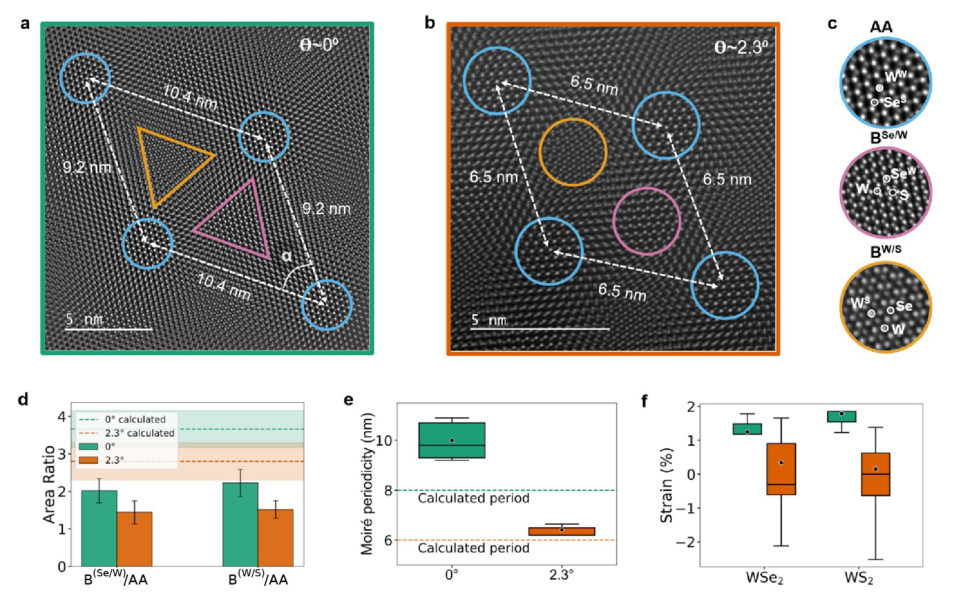
<figcaption class="paper-figure-caption"><b>Fig 2.</b> Figure 2: Structural reconstruction and external strain effects. High-resolution filtered ADF- STEM images from (a) reconstructed (green box) and (b) partially-reconstructed (orange box) WSe2/WS2 heterobilayers indicating different stacking registries – AA (blue), BSe/W (pink), and BW/S(yellow). White dotted lines outline a single moiré unit cell. The scale bar is 5 nm. (c) Atomic configurations of AA, and Bernal (BSe/W, and BW/S) stackings. (d) Bernal (BSe/W and BW/S) to AA stacking area ratio in reconstructed (green) and partially-reconstructed (orange) heterostructures, signifying the extent of structural reconstruction. (e) Estimated moiré periodicity from the experimental ADF-STEM...</figcaption>
</figure>
<figure class="paper-figure-card">
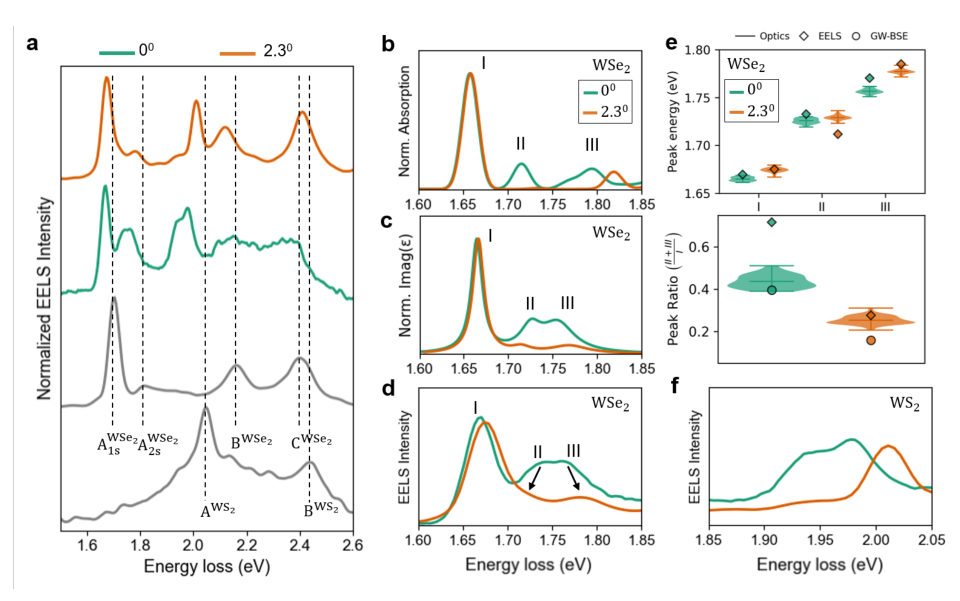
<figcaption class="paper-figure-caption"><b>Fig 3.</b> Figure 3: Evidence of structural reconstruction on the excitons in WSe2/WS2. (a)</figcaption>
</figure>
<figure class="paper-figure-card">
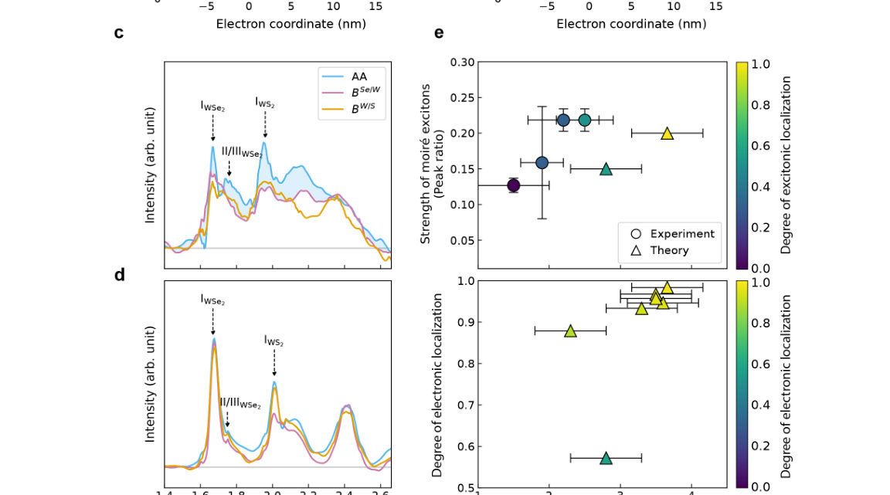
<figcaption class="paper-figure-caption"><b>Fig 4.</b> Figure 4: Stacking site-specific exciton spectra in WSe2/WS2. (a) Calculated photoexcited electron charge density of the exciton, plotted for fixed hole positions in the moiré superlattice. The hole is fixed at the high-symmetry AA, BSe/W, and BW/S stackings, as shown in the inset. The exciton maps are plotted for the various peaks in the (a) reconstructed and (b) partially- reconstructed heterostructures. The solid lines are a guide to the eye, highlighting the electron</figcaption>
</figure>
</div>

<p><strong>Summary.</strong> This study pioneers the visualization of moiré exciton behavior in twisted TMD bilayers by directly linking structural changes to electronic properties. Using advanced STEM-EELS and theory, the authors prove that exciton localization is governed by the degree of structural reconstruction and external strain, rather than just spectral signatures. This work offers new design principles for engineering quantum materials.</p>
<p><strong>Why it may be interesting.</strong> The work provides a detailed, experimentally validated mechanism for controlling excitonic properties in 2D materials using structural tuning (strain/reconstruction), which is highly relevant for designing quantum optoelectronic devices and understanding many-body physics in engineered quantum systems.</p>
<details>
<summary>Detailed structure</summary>
<p><strong>Main problem.</strong> The paper aims to resolve the physical mechanism linking structural reconstruction and external strain to the localization or delocalization of moiré excitons in twisted bilayer TMDs.</p>
<p><strong>Main result.</strong> Exciton localization is driven by the extent of structural reconstruction and external strain, not merely by the appearance of new optical resonances. The study establishes a phase-space window for engineering robust exciton localization.</p>
<p><strong>Method.</strong> The research combines cryogenic monochromated STEM-EELS spectroscopy, optical reflectance measurements, and first-principles GW-Bethe Salpeter equation calculations.</p>
<p><strong>Model / system.</strong> The physical system is the WSe2/WS2 moiré superlattice, which exhibits distinct stacking sites (AA, Bernal) whose relative areas change due to structural reconstruction and external strain.</p>
<p><strong>Key observables.</strong> Exciton localization (mapped via electron density $|\psi(\mathbf{r}_e, \mathbf{r}_h)|$), structural reconstruction (area ratios of stacking sites), and external tensile strain (quantified via lattice parameter changes).</p>
<p><strong>Important parameters / regimes.</strong> Twist angle, extent of structural reconstruction, and external strain magnitude (e.g., 1% tensile strain).</p>
<p><strong>Assumptions / limitations.</strong> The authors assume that the primary drivers for exciton behavior are structural reconstruction and external strain, and that conventional optical spectroscopy alone is insufficient to prove localization.</p>
<p><strong>Figures summary.</strong> Figures illustrate structural reconstruction via STEM-EELS, map exciton localization dependence on stacking site and reconstruction extent, and present a phase plot correlating structural metrics with exciton localization.</p>
<p><strong>Paper structure.</strong> The paper progresses by first identifying the unresolved mechanism, then presenting experimental evidence using STEM-EELS and optical spectroscopy to quantify structural changes, and finally developing a comprehensive framework correlating these structural parameters with the theoretical understanding of exciton localization.</p>
</details>
<details>
<summary>Abstract</summary>
<p>Spectral fingerprints in optical absorption and emission have typically been used as a signature of exciton localization in twisted moiré bilayers. However, the mechanism by which excitons become confined to specific stacking sites and their associated optical signature is experimentally unresolved. Here, we directly visualize in real space how tuning the change in extent of structural reconstruction leads to localization and delocalization of moiré excitons in the WSe2/WS2 moiré superlattice. Using cryogenic monochromated electron energy loss spectroscopy, together with first-principles GW-Bethe Salpeter equation calculations and optical spectroscopy, we uncover the physical mechanism that drives the correlation between twist-angle-dependent structural transformations, the real-space localization of moiré excitons, and their optical signatures. Surprisingly, and in contrast to the prevailing understanding, we show that the emergence of new moiré exciton resonances in the optical spectra alone is insufficient to establish exciton localization. Instead, the extent of structural reconstruction and external strain drives exciton localization, leading to new design principles for engineering moiré excitons and strain-aware quantum optoelectronic devices.</p>
</details>
<p><sub><a href="#top">↑ back to top</a></sub></p>

<p><a id="paper-2609.35513"></a></p>
<h3 id="superfluid-spin-transport-in-the-van-der-waals-antiferromagnet-crclmath2191math"><a href="http://arxiv.org/abs/2609.35513v1">Superfluid Spin Transport in the Van der Waals Antiferromagnet CrCl$_3$</a></h3>
<p><strong>Authors:</strong> Peisen Yuan, Xiaomin Guo, Vincent Flynn, Benedetta Flebus, Fèlix Casanova, Luis E. Hueso<br>
<strong>Type:</strong> experiment · <strong>Category:</strong> other · <strong>PDF:</strong> <a href="https://arxiv.org/pdf/2609.35513v1">https://arxiv.org/pdf/2609.35513v1</a><br>
<strong>Analysis basis:</strong> full PDF text, analyzed in chunks
<strong>Topic relevance:</strong> <code>analog quantum simulation</code> <strong>2/5</strong> · <code>correlated / nonlocal dissipation</code> <strong>1/5</strong></p>
<div class="figure-strip-hint">↔ Scroll figures horizontally</div>
<div class="paper-figures-scroll">
<figure class="paper-figure-card">
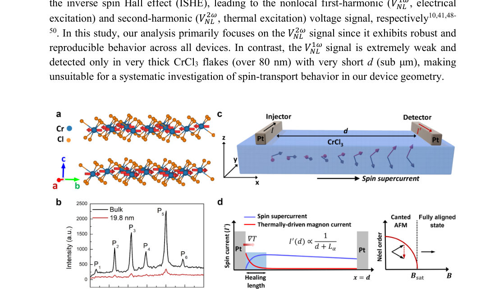
<figcaption class="paper-figure-caption"><b>Fig 1.</b> Figure 1. Superfluid spin transport in CrCl3 within a lateral device. a, Crystal and magnetic structure of CrCl3. b, Raman spectra comparing bulk CrCl3 and an exfoliated flake used in the fabricated lateral device (Device 1). c, Schematic illustration of a coherent phase gradient in the spin precession angle, which drives the flow of a spin supercurrent in a nonlocal transport geometry. d, Left: Schematic of a nonlocal spin current transport in the Pt/CrCl₃/Pt system. A charge current applied in the left Pt contact creates a temperature gradient at the interface, causing an injection of spin current into the adjacent CrCl3 via the spin Seebeck effect. Thermally-driven magnons scatter and...</figcaption>
</figure>
<figure class="paper-figure-card">
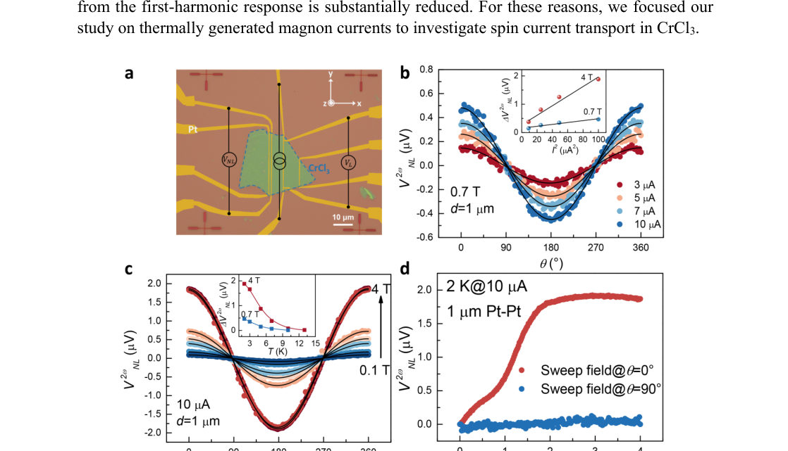
<figcaption class="paper-figure-caption"><b>Fig 2.</b> Figure 2. Nonlocal magnon transport measurement in Device 1. a, Optical microscope image of the fabricated nonlocal device with a 19.8-nm-thick CrCl3. An in-plane (IP) magnetic field B is applied at an angle θ relative to the injected current I, where θ = 0° corresponds to B perpendicular to I. b, ADMR measurements of 𝑉%&amp;</figcaption>
</figure>
<figure class="paper-figure-card">
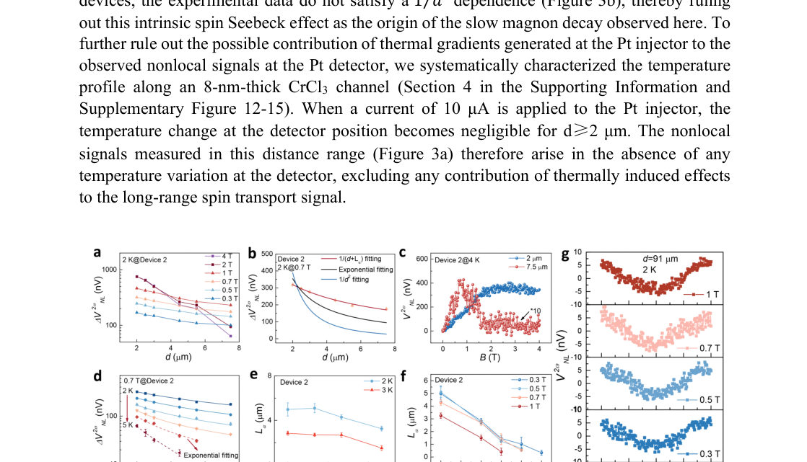
<figcaption class="paper-figure-caption"><b>Fig 3.</b> Figure 3. Experimental evidence of superfluid spin transport in CrCl3. a, Semilogarithmic plot of ∆𝑉%&amp;</figcaption>
</figure>
<figure class="paper-figure-card">
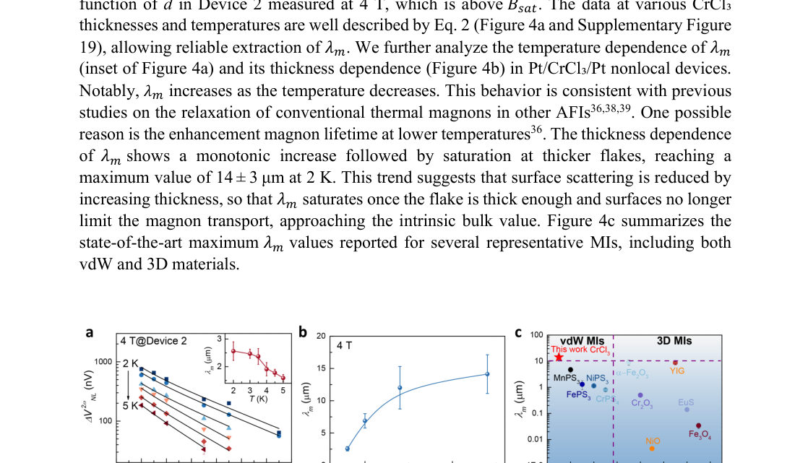
<figcaption class="paper-figure-caption"><b>Fig 4.</b> Figure 4. Conventional diffusive magnon transport at the field-induced FM state of CrCl3. a, ∆𝑉%&amp;</figcaption>
</figure>
</div>

<p><strong>Summary.</strong> This work reports the discovery and characterization of superfluid spin transport in the 2D antiferromagnet CrCl3 using nonlocal electrical measurements. By analyzing the non-exponential decay of the spin signal, the authors confirm that spin superfluidity is realized in the canted magnetic phase. This establishes CrCl3 as a promising platform for energy-efficient, long-distance spin electronics.</p>
<p><strong>Why it may be interesting.</strong> The study provides experimental evidence for a macroscopic quantum phenomenon (superfluidity) in a magnetic insulator, linking fundamental many-body concepts to practical spintronic device architectures.</p>
<details>
<summary>Detailed structure</summary>
<p><strong>Main problem.</strong> The research addresses the challenge of achieving ultra-low-loss spin transport, specifically investigating the emergence and characteristics of spin superfluidity in a suitable material system.</p>
<p><strong>Main result.</strong> The authors successfully demonstrated superfluid spin transport in the van der Waals antiferromagnet CrCl3, characterized by a long-range, weakly decaying spin current that is suppressed by strong magnetic fields or high temperatures.</p>
<p><strong>Method.</strong> Nonlocal transport measurements were performed using Pt/CrCl3/Pt device structures, combining electrical and thermal excitation methods to probe spin current decay over distance.</p>
<p><strong>Model / system.</strong> The system is the easy-plane van der Waals antiferromagnetic insulator CrCl3. The physics involves comparing the measured nonlocal spin current decay against theoretical models for diffusive magnon transport versus the predicted algebraic decay of a superfluid state.</p>
<p><strong>Key observables.</strong> Nonlocal voltage signals (V'1, V'2), spin current decay vs. distance (d), and the Néel order parameter evolution with magnetic field (B).</p>
<p><strong>Important parameters / regimes.</strong> Low magnetic fields and temperatures are required to sustain the superfluid state; the decay law is characterized by an algebraic decay $I' \propto d^{-\alpha}$.</p>
<p><strong>Assumptions / limitations.</strong> The analysis assumes that for separations $d \geq 2 \mu	ext{m}$ and small currents, the measured nonlocal signals are free from contributions due to Joule heating or thermal gradients.</p>
<p><strong>Figures summary.</strong> Figures illustrate the crystal structure and magnetic properties of CrCl3, schematics of the nonlocal device setup, and quantitative data showing the nonlocal voltage decay versus separation distance (d) under varying magnetic fields and temperatures.</p>
<p><strong>Paper structure.</strong> The paper establishes the need for spin superfluidity, details the nonlocal measurement setup using Pt/CrCl3/Pt, presents data showing slow, non-exponential decay of the spin signal, rules out thermal contributions, and concludes by confirming the superfluid state in the canted AFM phase.</p>
</details>
<details>
<summary>Abstract</summary>
<p>Over the past decade, the quest for spin superfluidity has moved to the forefront of spintronics, driven by the promise of phase-gradient-driven, ultra-low-loss spin transport. However, experimental investigations remain limited, primarily due to the lack of suitable material systems. Here, we report on the discovery and control of a superfluid spin transport in the easy-plane van der Waals antiferromagnetic (AFM) insulator CrCl$_3$ by a nonlocal device structure. Combining nonlocal magnon transport measurements with theoretical modelling, we demonstrate that spin superfluidity emerges in CrCl$_3$ under canted AFM spin configurations, where it gives rise to ultra-long range (around 90 $μ$m), weakly decaying spin transport. We also provide direct evidence that strong magnetic fields and elevated temperatures suppress the superfluid state, restoring the rapid exponential decay with distance of incoherent magnons. These findings underscore the potential of spin superfluidity in two-dimensional magnetic insulators and establish CrCl$_3$ as a promising platform for energy-efficient, long-distance spin transport in next-generation spintronic applications.</p>
</details>
<p><sub><a href="#top">↑ back to top</a></sub></p>

<p><a id="paper-2609.34544"></a></p>
<h3 id="probing-hydrodynamics-in-graphene-and-quark-matter-via-seebeck-coefficient"><a href="http://arxiv.org/abs/2609.34544v1">Probing hydrodynamics in graphene and quark matter via Seebeck coefficient</a></h3>
<p><strong>Authors:</strong> Subhalaxmi Nayak, Jayanta Dey, Sabyasachi Ghosh<br>
<strong>Type:</strong> theory · <strong>Category:</strong> strongly correlated electrons · <strong>PDF:</strong> <a href="https://arxiv.org/pdf/2609.34544v1">https://arxiv.org/pdf/2609.34544v1</a><br>
<strong>Analysis basis:</strong> full PDF text, analyzed in chunks
<strong>Topic relevance:</strong> <code>Keldysh / 2PI / non-Gaussian methods</code> <strong>2/5</strong></p>
<div class="figure-strip-hint">↔ Scroll figures horizontally</div>
<div class="paper-figures-scroll">
<figure class="paper-figure-card">
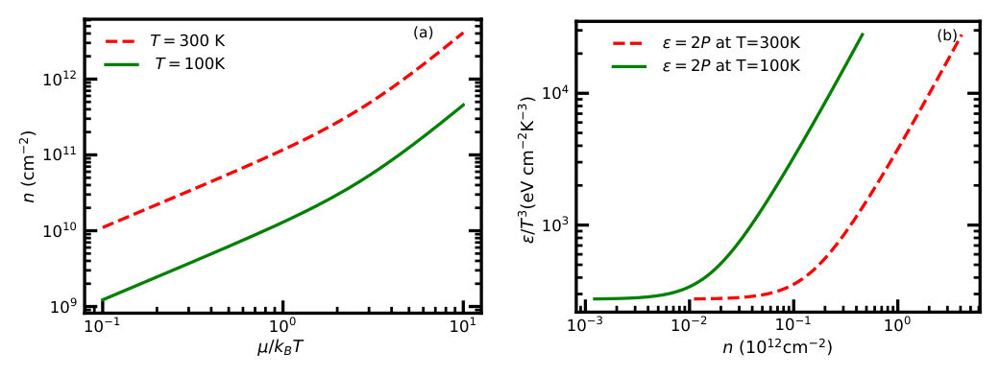
<figcaption class="paper-figure-caption"><b>Fig 1.</b> FIG. 1: (a): Net number density (n) as a function of scaled chemical potential (µ/kBT) (b): Scaled energy density ε/T 3 as a function of n at T = 300 and 100 K for graphene.</figcaption>
</figure>
<figure class="paper-figure-card">
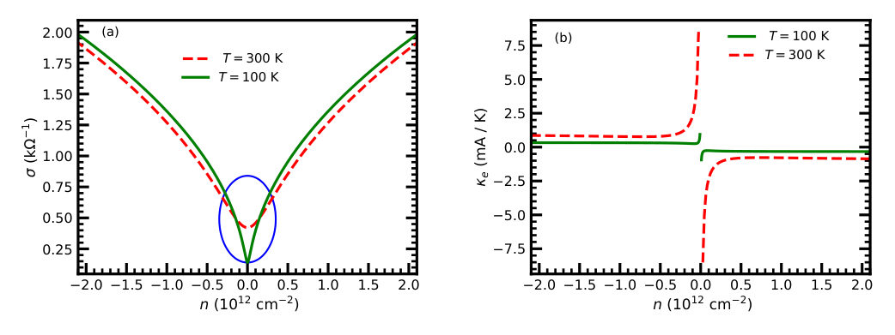
<figcaption class="paper-figure-caption"><b>Fig 2.</b> FIG. 2: Transport coefficients (a) electrical conductivity (σ) showing the quantum critical domain and (b) thermoelectric response coefficients (ke) with reference to net carrier density (n) at T = 300 and 100 K for graphene.</figcaption>
</figure>
<figure class="paper-figure-card">
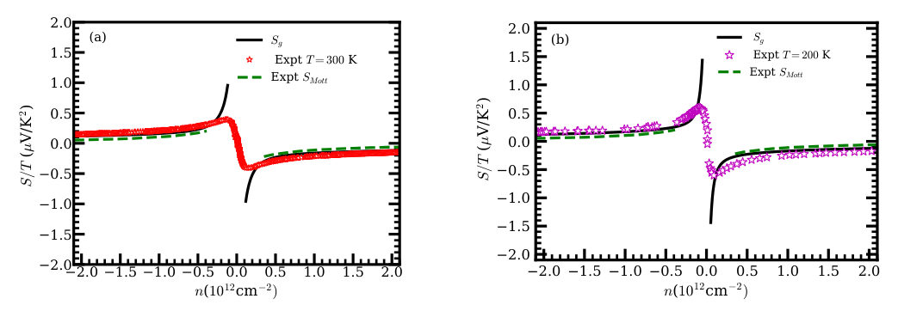
<figcaption class="paper-figure-caption"><b>Fig 3.</b> FIG. 3: Scaled Seebeck coefficient S/T as a function of net carrier density n for graphene: (a) T = 300 K and (b) T = 200 K. Black solid lines depict the present theoretical work Sg, while green dashed lines show the conventional Fermi liquid description of Mott relation (Eq. (1)) using experimentally measured conductivity [43]. Experimental data are represented by red stars (T = 300 K) and magenta stars (T = 200 K) for comparison [43].</figcaption>
</figure>
<figure class="paper-figure-card">
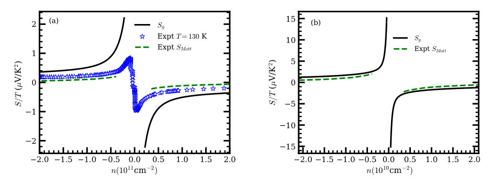
<figcaption class="paper-figure-caption"><b>Fig 4.</b> FIG. 4: Scaled Seebeck coefficient S/T as a function of net carrier density n for graphene: (a) T = 130 K and (b) T = 19 K. Present theoretical work Sg (black solid lines) are compared with the conventional Fermi liquid description of Mott relation (green dashed lines, Eq. (1)) and experimental data (blue stars) at (T = 130 K) [43]. The theoretical predication of the Sg is displayed in (b) at T = 19 K.</figcaption>
</figure>
<figure class="paper-figure-card">
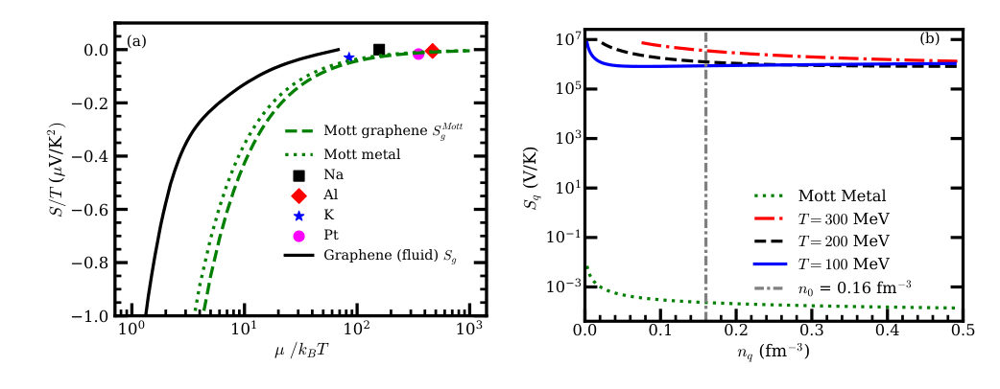
<figcaption class="paper-figure-caption"><b>Fig 5.</b> FIG. 5: (a) Scaled Seebeck coefficient S/T vs reduced chemical potential µ/kBT for graphene (fluid) Sg and Mott relation (metal Eq. (5) and graphene Eq. (33)) including some experimental data [77] for T = 300 K (b) Seebeck coefficient for QGP Sq vs net quark density nq over different temperatures in comparison with the predicted Mott relation for metal Eq. (5).</figcaption>
</figure>
</div>

<p><strong>Summary.</strong> This work uses the Seebeck coefficient to study hydrodynamic transport in graphene and quark matter. By solving the Boltzmann transport equation, the authors show that deviations from the standard Mott relation in the low-density regime confirm the presence of collective fluid behavior in both systems. This provides a unified theoretical framework for understanding transport in different strongly correlated quantum materials.</p>
<p><strong>Why it may be interesting.</strong> The connection between macroscopic transport coefficients (like S) and underlying fluid dynamics in exotic quantum matter (like graphene or QGP) provides insights into non-equilibrium many-body physics, which is relevant to understanding strongly interacting quantum systems.</p>
<details>
<summary>Detailed structure</summary>
<p><strong>Main problem.</strong> The paper investigates the Seebeck coefficient as a diagnostic tool to probe collective hydrodynamic transport behavior in strongly correlated quantum systems like graphene and quark-gluon plasma.</p>
<p><strong>Main result.</strong> The Seebeck coefficient deviates significantly from the conventional Mott relation in the low-carrier-density (Dirac fluid) regime for both graphene and QGP, indicating the emergence of collective hydrodynamic transport.</p>
<p><strong>Method.</strong> The study employs a kinetic-theory approach, solving the Boltzmann transport equation in the relaxation-time approximation (RTA) to derive transport coefficients.</p>
<p><strong>Model / system.</strong> The primary systems are graphene (a 2D Dirac fermion system) and the quark-gluon plasma (QGP). The analysis treats these systems using a quasi-relativistic fluid model derived from conservation laws.</p>
<p><strong>Key observables.</strong> Seebeck coefficient (S), electrical conductivity ($\sigma_e$), and thermal conductivity ($\kappa_e$).</p>
<p><strong>Important parameters / regimes.</strong> Carrier density ($n$), chemical potential ($\mu$), and temperature ($T$). Key regimes include the Fermi-liquid (FL) and Dirac fluid (DF) domains.</p>
<p><strong>Assumptions / limitations.</strong> The analysis relies on the relaxation-time approximation (RTA) and assumes an energy-independent relaxation time to satisfy conservation laws.</p>
<p><strong>Figures summary.</strong> Figures illustrate thermodynamic quantities (density vs. chemical potential) and plot transport coefficients ($\sigma_e$ and $\kappa_e$) versus carrier density for graphene.</p>
<p><strong>Paper structure.</strong> The paper derives the Seebeck coefficient for both graphene and QGP using the BTE in RTA, comparing the results against the Mott relation across different carrier density regimes.</p>
</details>
<details>
<summary>Abstract</summary>
<p>We investigate the Seebeck coefficient as a probe of collective transport behavior in graphene and quark-gluon plasma using a kinetic-theory approach in the hydrodynamic regime. The Seebeck coefficient is obtained by solving the Boltzmann transport equation in the relaxation-time approximation. At high-charge-carrier density, corresponding to the Fermi-liquid domain, our result approaches the behavior expected from the conventional Mott relation. In contrast, significant deviations from the Mott relation are observed in the low-carrier-density regime, corresponding to the Dirac fluid domain. These facts are in good agreement with experimental Seebeck coefficient data for graphene. This behavior indicates the emergence of collective hydrodynamic transport in graphene. The enthalpy per particle plays a key role for the Seebeck coefficient in the Dirac fluid regime. We extend our formalism to the ultra-relativistic quark-gluon plasma. A similar deviation from the Mott relation is observed, supporting a similar fluid response in the Seebeck coefficient across two markedly different strongly correlated quantum systems - graphene and quark matter.</p>
</details>
<p><sub><a href="#top">↑ back to top</a></sub></p>

<p><a id="paper-2609.34706"></a></p>
<h3 id="sub-20-nm-spin-textures-with-arbitrary-topological-charge-stabilized-by-higher-order-interactions"><a href="http://arxiv.org/abs/2609.34706v1">Sub-20 nm spin textures with arbitrary topological charge stabilized by higher-order interactions</a></h3>
<p><strong>Authors:</strong> Zhen Sun, Shiwei Zhu, Moritz A. Goerzen, Megha Arya, Changsheng Song, Dongzhe Li<br>
<strong>Type:</strong> theory · <strong>Category:</strong> other · <strong>PDF:</strong> <a href="https://arxiv.org/pdf/2609.34706v1">https://arxiv.org/pdf/2609.34706v1</a><br>
<strong>Analysis basis:</strong> full PDF text, analyzed in chunks
<strong>Topic relevance:</strong> <code>analog quantum simulation</code> <strong>2/5</strong></p>
<div class="figure-strip-hint">↔ Scroll figures horizontally</div>
<div class="paper-figures-scroll">
<figure class="paper-figure-card">
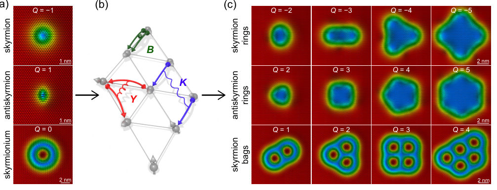
<figcaption class="paper-figure-caption"><b>Fig 1.</b> FIG. 1. Emergence of high-Q topological spin textures driven by higher-order interactions (HOI). (a) Basic spin texture units consisting of a skyrmion (Q = −1), an antiskyrmion (Q = 1), and a skyrmionium (Q = 0). (b) Schematic representation of HOI on a triangular lattice. Here, HOI couple two of the exchange interactions to form four-spin interactions involving two (B, green), three (Y , red), or four (K, blue) sites as indicated by the springs. (c) High-Q topological spin textures obtained with HOI, comprising skyrmion rings (Q = −2 to −5), antiskyrmion rings (Q = 2 to 5), and skyrmion bags (Q = 1 to 4). All spin textures are on a sub-20 nm length scale. Every texture shown is fully...</figcaption>
</figure>
<figure class="paper-figure-card">
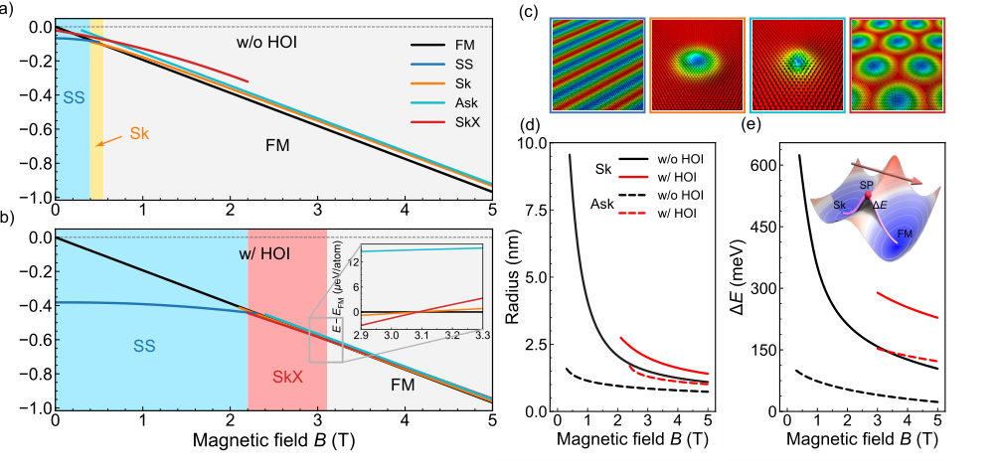
<figcaption class="paper-figure-caption"><b>Fig 2.</b> FIG. 2. Field-dependent phase stability and collapse barriers of topological spin textures without and with HOI. (a-b) Energies of the ferromagnetic (FM), spin spiral (SS), skyrmion (Sk), antiskyrmion (Ask), and skyrmion lattice (SkX) states as functions of B, obtained without and with HOI. Sk denotes a single skyrmion per simulation cell, that is, the most dilute lattice periodicity considered here, whereas SkX refers to a dense skyrmion lattice. Energies are given relative to the FM state at B = 0, and shaded regions indicate the ground state in each field range. The inset in panel (b) highlights the energy difference E −EFM near the SkX–FM phase boundary. (c) Spin configurations used as...</figcaption>
</figure>
<figure class="paper-figure-card">
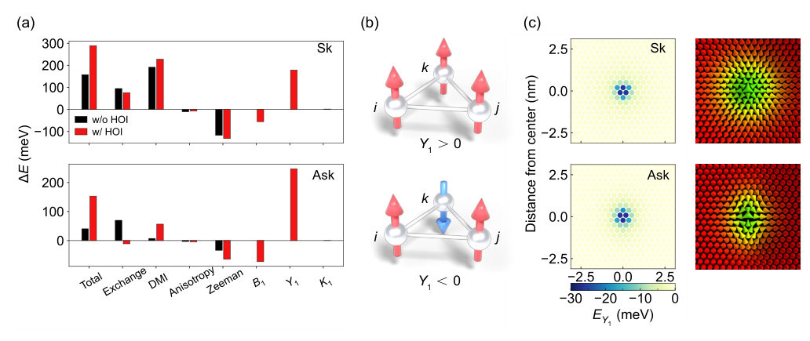
<figcaption class="paper-figure-caption"><b>Fig 3.</b> FIG. 3. Energy barrier decomposition and role of the four-spin three-site interaction Y1 in soliton stability. (a) Decomposition of the collapse barrier of Fig.2 at B = 3 T into individual energy terms, ∆E = ESP −Eini, for the skyrmion (Sk, top) and the antiskyrmion (Ask, bottom), calculated without (black) and with (red) HOI. B1, Y1, and K1 denote the biquadratic, four-spin three-site, and four-spin four-site terms of Table I. (b) Schematic illustration of the energetically favored local spin arrangements on a triangular plaquette for positive and negative Y1. A positive Y1 favors the same sign of the scalar products of the (i, j) and (j, k) spin pairs, whereas a negative Y1 favors...</figcaption>
</figure>
<figure class="paper-figure-card">
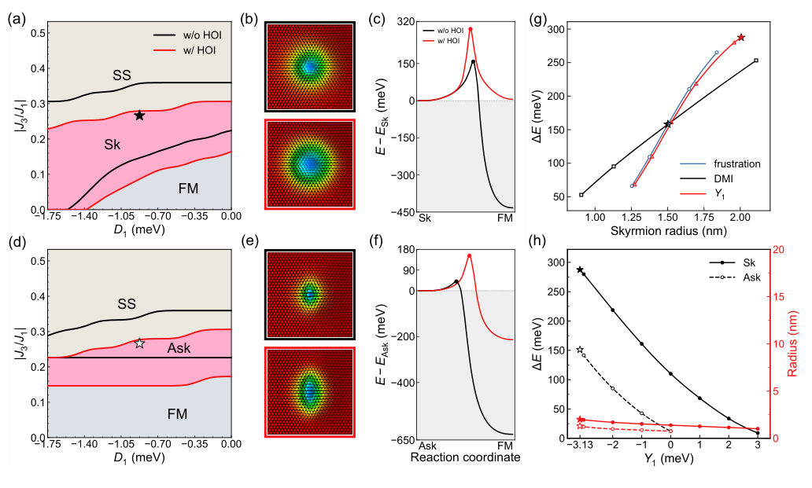
<figcaption class="paper-figure-caption"><b>Fig 4.</b> FIG. 4. Tuning skyrmion and antiskyrmion stability through exchange frustration, DMI, and HOI. (a) Phase diagrams at B = 3 T as functions of the nearest-neighbor DMI D1 and exchange frustration |J3/J1|, calculated without (black boundaries) and with (red boundaries) HOI, for skyrmions. The stars denote the full DFT parameter set used throughout this work. (b) Equilibrium skyrmion spin textures at the parameter set marked by the star, calculated without (top) and with (bottom) HOI. (c) Corresponding MEPs for the skyrmion collapse, without (black) and with (red) HOI, filled circles mark the SP. HOI significantly enhance the collapse barrier. (d-f) Same as (a-c), but for antiskyrmions. (g)...</figcaption>
</figure>
<figure class="paper-figure-card">
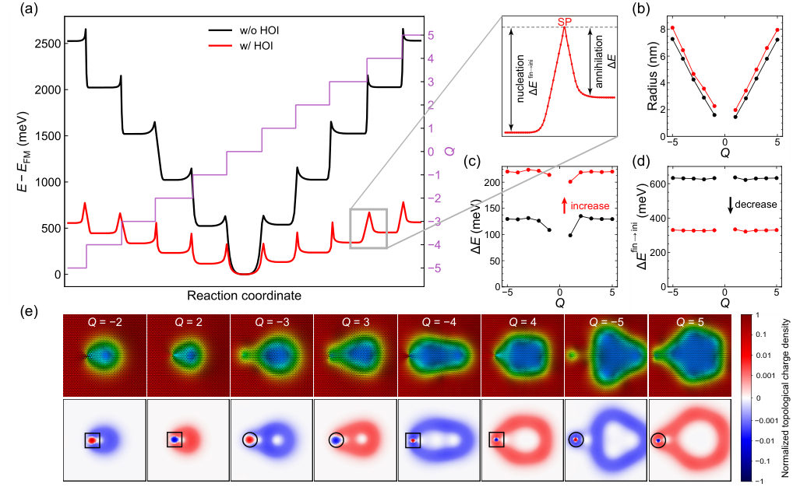
<figcaption class="paper-figure-caption"><b>Fig 5.</b> FIG. 5. MEPs and collapse mechanisms of high-Q skyrmion and antiskyrmion rings at zero field. (a) Total energy relative to the FM state along MEPs connecting the ring states from Q = −5 to Q = 5, calculated without (black) and with (red) HOI at zero magnetic field. The violet staircase shows the evolution of Q along the reaction coordinate (right axis). Inset: definition of the energy barrier ∆E and the nucleation barrier ∆Efin→ini (SP relative to the collapsed state) at a single transition. (b) Radius of the ring states versus Q, without and with HOI, all textures remain well below 20 nm in diameter. (c-d) Q dependence of ∆E and ∆Efin→ini, without and with HOI. (e) Spin configurations and...</figcaption>
</figure>
</div>

<p><strong>Summary.</strong> This work predicts that higher-order spin interactions (HOI) are crucial for stabilizing high-topological-charge spin textures (up to $|Q|=5$) in 2D van der Waals magnets at nanoscale dimensions. Using DFT-derived spin models and advanced simulation techniques, the authors demonstrate that these HOI enhance the thermal stability and prevent the collapse of these complex magnetic structures.</p>
<p><strong>Why it may be interesting.</strong> While focused on magnetism, the study of topological stability, energy barriers, and phase transitions in structured quantum materials is relevant to understanding complex many-body dynamics in condensed matter systems.</p>
<details>
<summary>Detailed structure</summary>
<p><strong>Main problem.</strong> The primary goal is to extend the stabilization of topological magnetization textures from low topological charges ($|Q|=1$) to high charges ($|Q|>1$) in magnetic materials.</p>
<p><strong>Main result.</strong> Higher-order spin interactions (HOI) are shown to be essential for stabilizing these high-$Q$ spin textures, allowing them to exist at sub-20 nm scales and even in the absence of Dzyaloshinskii-Moriya interaction.</p>
<p><strong>Method.</strong> The study uses atomistic spin models parameterized by first-principles DFT calculations, employing spin simulations (SPINAKER) and Minimum Energy Path (GNEB) calculations to determine stability barriers.</p>
<p><strong>Model / system.</strong> The research focuses on Janus monolayers, specifically van der Waals magnets like MnPCl, modeled by a spin Hamiltonian that includes Heisenberg exchange, DMI, anisotropy, and crucial higher-order terms (biquadratic and four-spin interactions).</p>
<p><strong>Key observables.</strong> Topological charge ($Q$), thermal stability, energy barriers ($\Delta E$), and the size/radius of the stabilized spin textures.</p>
<p><strong>Important parameters / regimes.</strong> Sub-20 nm size scale, the presence/absence of DMI, and the magnitude of the higher-order interaction parameters ($Y_1$).</p>
<p><strong>Assumptions / limitations.</strong> Dipole-dipole interactions are neglected, and the model relies on nearest-neighbor interactions for the HOI terms.</p>
<p><strong>Figures summary.</strong> Figures illustrate schematic representations of high-$Q$ textures (rings, bags) and show field-dependent phase stability diagrams, comparing energy barriers with and without HOI.</p>
<p><strong>Paper structure.</strong> The paper establishes the problem of high-$Q$ stabilization, details the atomistic spin model derived from DFT, presents simulations showing HOI's necessity for stability, and concludes by identifying new collapse mechanisms.</p>
</details>
<details>
<summary>Abstract</summary>
<p>Topological magnetization textures play a central role in modern magnetism. For many applications, spin textures with different topological charges $Q$ in the same system are particularly attractive. Although the coexistence of skyrmions and antiskyrmions ($|Q| = 1$) has been reported in inversion-symmetric magnets, extending this to high-$Q$ ($|Q| > 1$) textures with arbitrary charge remains elusive. Here, using an atomistic spin model parameterized from first-principles calculations, we predict the emergence of sub-20 nm high-$Q$ textures in Janus monolayers, van der Waals magnets of growing interest. We explore skyrmion and antiskyrmion rings as well as skyrmion bags with $|Q|$ up to 5, and characterize their nucleation mechanisms, thermal stability, and collapse pathways. We find that higher-order spin interactions (HOI), which extend the conventional bilinear-exchange Hamiltonian, are essential for stabilizing these high-$Q$ spin textures. The rings remain thermally stable at zero magnetic field. HOI substantially enhance their energy barriers while leaving their size nearly unchanged and stabilize them even in the absence of Dzyaloshinskii-Moriya interaction. Skyrmion bags, in contrast, nucleate only in the presence of HOI. In particular, the four-spin three-site interaction is the key ingredient preventing high-$Q$ textures from collapsing into the ferromagnetic state. Finally, we identify previously unreported parity-dependent collapse mechanisms for high-$Q$ textures. Our results establish HOI as an overlooked mechanism for high-$Q$ nucleation.</p>
</details>
<p><sub><a href="#top">↑ back to top</a></sub></p>

<p><a id="paper-2609.32136"></a></p>
<h3 id="geometry-controlled-polarization-photocurrents-in-scalable-ptse2-infrared-pixels"><a href="http://arxiv.org/abs/2609.32136v1">Geometry-Controlled Polarization Photocurrents in Scalable PtSe2 Infrared Pixels</a></h3>
<p><strong>Authors:</strong> Eunice Y. Paik, Owen A. Vail, Madaline R. Marland, William A. Beck, Antonio Llopis-Jepsen, Wendy L. Sarney, Jeffery H. Leach, Stefan Heiserer, Nikolas Dominik, Cormac Ó Coileáin, Paul B. Seifert, Georg S. Duesberg, Blair C. Connelly, George J. de Coster<br>
<strong>Type:</strong> both · <strong>Category:</strong> other · <strong>PDF:</strong> <a href="https://arxiv.org/pdf/2609.32136v1">https://arxiv.org/pdf/2609.32136v1</a><br>
<strong>Analysis basis:</strong> full PDF text, analyzed in chunks
<strong>Topic relevance:</strong> <code>Keldysh / 2PI / non-Gaussian methods</code> <strong>1/5</strong> · <code>analog quantum simulation</code> <strong>1/5</strong> · <code>driven-dissipative phase transition</code> <strong>1/5</strong> · <code>methods for driven-dissipative</code> <strong>1/5</strong> · <code>non-equilibrium universality</code> <strong>1/5</strong> · <code>quantum measurements</code> <strong>1/5</strong></p>
<div class="figure-strip-hint">↔ Scroll figures horizontally</div>
<div class="paper-figures-scroll">
<figure class="paper-figure-card">
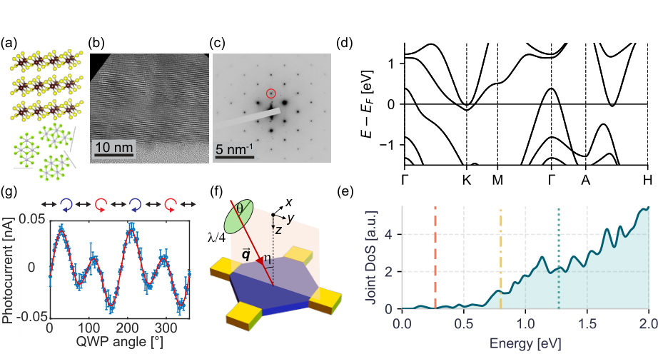
<figcaption class="paper-figure-caption"><b>Fig 1.</b> Figure 1. Nanocrystalline PtSe2 device and experimental geometries. (a) Top: side-view schematic</figcaption>
</figure>
<figure class="paper-figure-card">
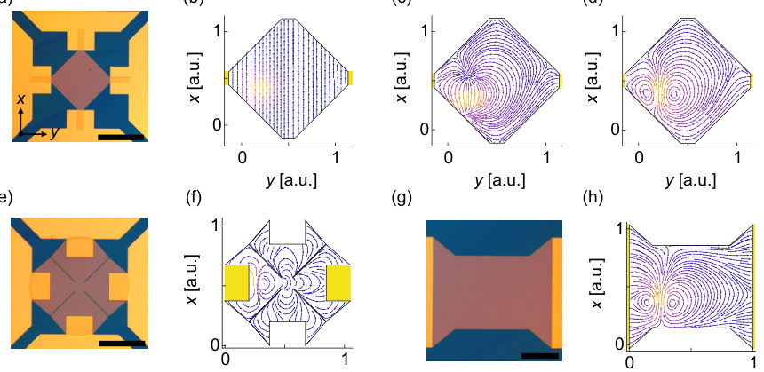
<figcaption class="paper-figure-caption"><b>Fig 2.</b> Figure 2. Optical microscope images and finite element simulated current flow plots of PtSe2 pixels.</figcaption>
</figure>
<figure class="paper-figure-card">
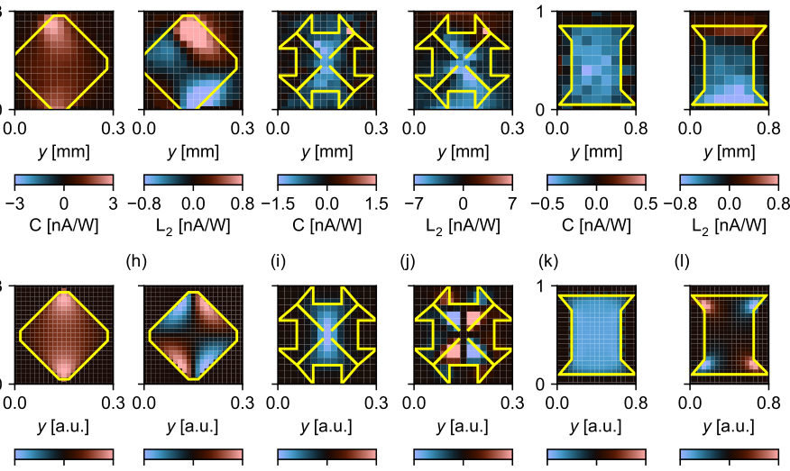
<figcaption class="paper-figure-caption"><b>Fig 3.</b> Figure 3. Position-dependent photocurrent harmonic coefficients C and L2 for current collected in</figcaption>
</figure>
<figure class="paper-figure-card">
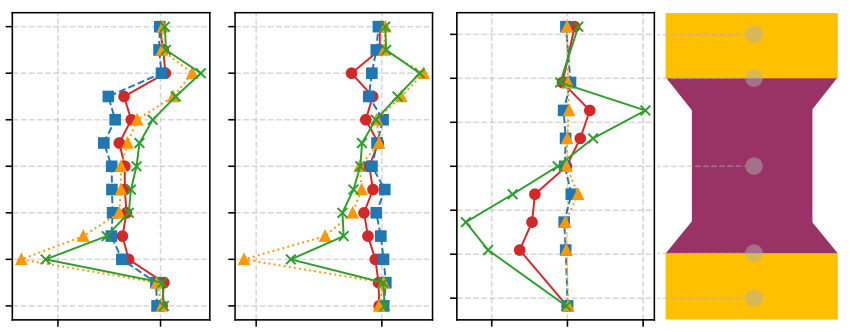
<figcaption class="paper-figure-caption"><b>Fig 4.</b> Figure 4. Wavelength-dependent harmonic coefficients along the length of the bow-tie device at (a)</figcaption>
</figure>
<figure class="paper-figure-card">
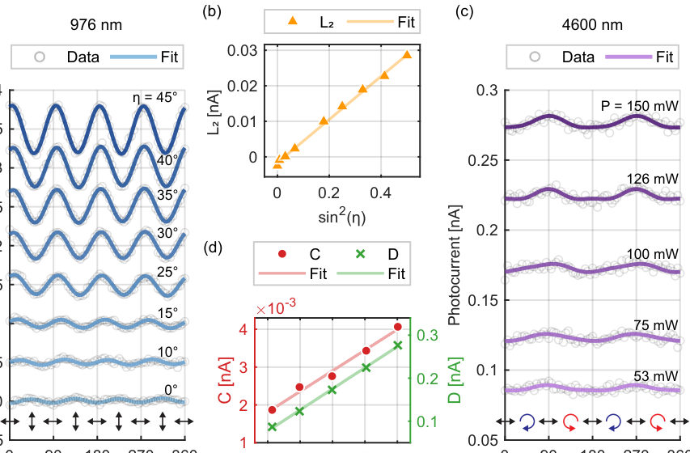
<figcaption class="paper-figure-caption"><b>Fig 5.</b> Figure 5. Dichroism-induced photothermal effect. (a) Linear polarization-dependent photocurrent</figcaption>
</figure>
</div>

<p><strong>Summary.</strong> This work demonstrates how the geometry of $   ext{PtSe}_2$ infrared pixels can be engineered to control and separate different polarization-dependent photocurrent mechanisms. By analyzing the spatial and spectral dependence of the measured current, the authors successfully distinguish intrinsic optical responses from artifacts caused by contact resistance or thermal effects. This provides a powerful, scalable platform for advanced IR sensing.</p>
<p><strong>Why it may be interesting.</strong> While primarily condensed matter/optics, the rigorous use of symmetry analysis, tensor formalism, and the separation of distinct physical contributions (e.g., optical vs. thermal) mirrors advanced techniques used in analyzing complex quantum response functions in open quantum systems.</p>
<details>
<summary>Detailed structure</summary>
<p><strong>Main problem.</strong> The goal is to develop polarization-sensitive photodetectors for infrared (IR) imaging that can measure multi-dimensional optical information beyond simple intensity measurements.</p>
<p><strong>Main result.</strong> The polarization response of $ ext{PtSe}_2$ pixels is strongly controlled by device geometry, allowing researchers to separate intrinsic optical photocurrents from extrinsic photothermal contributions.</p>
<p><strong>Method.</strong> The study combines experimental measurements of polarization-dependent photocurrents ($I(	heta)$) across various geometries (square, cloverleaf, bow-tie) with finite-element current-flow simulations.</p>
<p><strong>Model / system.</strong> The physical system is the noble metal dichalcogenide $ ext{PtSe}_2$, which exhibits strong spin-orbit coupling. The analysis models the photocurrent as a second-order nonlinear optical (NLO) response, incorporating photogalvanic and photothermoelectric effects.</p>
<p><strong>Key observables.</strong> Polarization-dependent photocurrent coefficients ($C, L_2$), spatial redistribution of the response, and wavelength-dependent harmonic coefficients.</p>
<p><strong>Important parameters / regimes.</strong> Operating wavelengths include near-infrared (976 nm), mid-infrared (1550 nm, 4600 nm), and the influence of device geometry (pixel shape).</p>
<p><strong>Assumptions / limitations.</strong> The analysis assumes that the measured photocurrent contains contributions from intrinsic optical effects, photothermoelectric effects (PTE), and contact-related photothermal effects, which must be separated using geometry and wavelength dependence.</p>
<p><strong>Figures summary.</strong> Figures illustrate schematic device structures, polarization dependence ($I(	heta)$ vs. QWP angle), simulated current flow for different geometries, and spatial mapping of polarization-dependent coefficients ($C, L_2$) at various wavelengths.</p>
<p><strong>Paper structure.</strong> The paper details the material characterization (structural/electronic), device fabrication, and then systematically analyzes the polarization-dependent photocurrent by comparing measurements from different geometries and varying excitation wavelengths to disentangle the underlying physical mechanisms (PGE, PTE, dichroism).</p>
</details>
<details>
<summary>Abstract</summary>
<p>Polarization-sensitive photodetectors provide multi-dimensional optical information beyond the capabilities of traditional intensity-based detectors. The noble metal dichalcogenide PtSe2 presents unique opportunities for tunable polarization detection due to its strong spin-orbit coupling, material stability, customizable broadband polarization responses, and direct compatibility with a wide range of substrates for back-end-of-line silicon integration. In this work, we demonstrate room-temperature near-infrared to mid-wavelength infrared polarization photoresponses using scalable, as-grown, wide-area PtSe2 films, and we show that the measured polarization response is reshaped by device geometry. Finite-element current-flow simulations reproduce the observed spatial redistribution of the polarization-sensitive response and localize the transverse polarization response near the pixel center. This geometry-enabled separation allows wavelength-dependent laser spot scans to distinguish symmetry-allowed photocurrents from contact-proximate, dichroism-mediated photothermal contributions. At near-infrared wavelengths, we observe spatial response that is consistent with linear-dichroic photothermoelectric currents, whereas mid-wavelength infrared measurements reveal a helicity-dependent photothermal contribution under oblique illumination. These results identify pixel boundary engineering as both a design lever and a diagnostic tool for scalable PtSe2 polarization-sensitive infrared pixels.</p>
</details>
<p><sub><a href="#top">↑ back to top</a></sub></p>

<p><a id="paper-2609.32654"></a></p>
<h3 id="electro-thermal-origins-of-enhanced-performance-and-scalability-in-disc-type-phase-change-memory"><a href="http://arxiv.org/abs/2609.32654v1">Electro-Thermal Origins of Enhanced Performance and Scalability in Disc-Type Phase-Change Memory</a></h3>
<p><strong>Authors:</strong> Ghazi Sarwat Syed, Loris Coccia, Siddharth Gautam, Vara Prasad Jonnalagadda, Abu Sebastian<br>
<strong>Type:</strong> theory · <strong>Category:</strong> other · <strong>PDF:</strong> <a href="https://arxiv.org/pdf/2609.32654v1">https://arxiv.org/pdf/2609.32654v1</a><br>
<strong>Analysis basis:</strong> full PDF text, analyzed in chunks
<strong>Topic relevance:</strong> <code>Keldysh / 2PI / non-Gaussian methods</code> <strong>1/5</strong> · <code>analog quantum simulation</code> <strong>1/5</strong> · <code>driven-dissipative phase transition</code> <strong>1/5</strong> · <code>methods for driven-dissipative</code> <strong>1/5</strong> · <code>non-equilibrium universality</code> <strong>1/5</strong></p>
<div class="figure-strip-hint">↔ Scroll figures horizontally</div>
<div class="paper-figures-scroll">
<figure class="paper-figure-card">
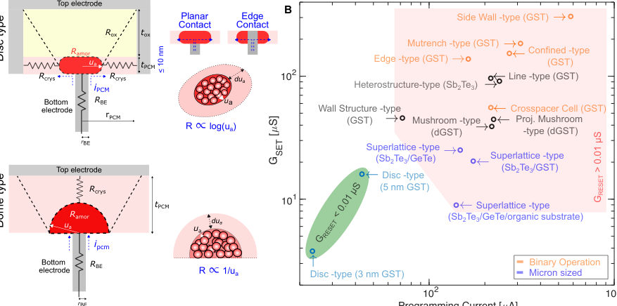
<figcaption class="paper-figure-caption"><b>Fig 1.</b> FIG. 1. Disc-type Phase Change Memory. (A) The top panel shows a schematic cross-sectional view of a disc-type device. The device features a vertical structure, with an ultra-thin (≤10 nm) phase-change material layer positioned between the dielectric and bottom electrode. Top contact is made laterally at the outer edge of the phase-change layer. Based on the fabrication design, the bottom electrode can form either a planar contact or an edge contact with the phase-change material. In both cases, the current flows radially through the device. Compared to 3D dome-type configurations in prototypical devices, such as the mushroom cell (bottom panel), the amorphous regions form spatially...</figcaption>
</figure>
<figure class="paper-figure-card">
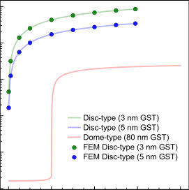
<figcaption class="paper-figure-caption"><b>Fig 2.</b> FIG. 2. Read Characteristics. (A) The device resistance as a function of the amorphous extent (ua) for disc-type and dome-type geometries, computed using the analytical model. In disc-type devices, current always traverses the amorphous region regardless of its size, whereas in dome-type geometries this occurs only once the amorphous volume fully covers the bottom electrode (for ua ≥rb.e). The scatter points represent resistance values obtained using finite-element simulations, showing a good agreement with the analytical model. (B) Variation in RESET resistance due to fabrication-induced variability in the bottom-electrode radius, rBE. The radius is sampled from a Gaussian distribution...</figcaption>
</figure>
<figure class="paper-figure-card">
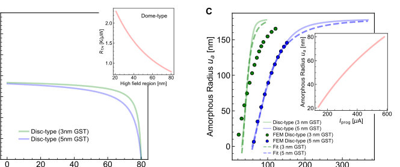
<figcaption class="paper-figure-caption"><b>Fig 3.</b> FIG. 3. RESET Characteristics. (A) Comparison of power density between disc-type and dome-type geometries, illustrating heat generation efficiency in the devices. Disc-type cells exhibit improved power density. (B) Thermal resistance of disc-type devices for various sizes of melt volumes. The inset shows a similar plot for a dome-type geometry. Notably, the absolute values of Rth are increased, and its spatial dependency is reduced in disc-type devices. (C) Programming-current dependence of the phase-change region in disc-type devices with 3 and 5 nm GST. Solid curves show the analytical electrothermal model, symbols represent FEM results, and dashed curves are stretched-exponential fits....</figcaption>
</figure>
<figure class="paper-figure-card">
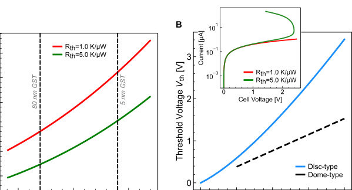
<figcaption class="paper-figure-caption"><b>Fig 4.</b> FIG. 4. Threshold Switching Characteristics. (A) Comparison of threshold field for different thermal resistance values. The logarithmic field dependence indicates higher voltages are required for switching. The dotted vertical lines are experimental values of activation energies of GST, with and without spaital confinement. (B) Computed threshold voltage characteristics as a function of amorphous volume in the disc and dome-type device geometries, showing a difference in their dependencies. The inset show the full current-voltage behavior of a full RESET state, highlighting the improved thermal resistance to be a key property in disc-type devices.</figcaption>
</figure>
<figure class="paper-figure-card">
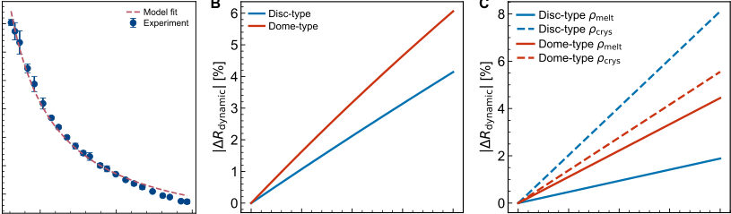
<figcaption class="paper-figure-caption"><b>Fig 5.</b> FIG. 5. Endurance characteristics. (A) Experimental Rdynamic as a function of programming current for a disc-type device, together with the fit obtained from the analytical model. (B) Magnitude of the relative variation in Rdynamic resulting from variations in the bottom-electrode radius rBE for disc- and dome-type phase configurations. (C) Magnitude of the relative variation in Rdynamic resulting from variations in the molten- and crystalline-state resistivities, ρmelt and ρcrys, for the two device geometries. The geometrical and material variations serve as proxies for structural and compositional changes that may develop during extensive cyclic stressing.</figcaption>
</figure>
</div>

<p><strong>Summary.</strong> This paper presents a comprehensive electro-thermal analysis of disc-type Phase-Change Memory, positioning it as a leading candidate for analog in-memory computing. Using compact analytical models, the authors demonstrate that the disc geometry mitigates variability and achieves superior scaling compared to conventional PCM designs. The work provides critical insights into optimizing device operation by understanding the underlying thermal and resistive physics.</p>
<p><strong>Why it may be interesting.</strong> While focused on solid-state memory, the detailed electro-thermal modeling, phase transition physics, and scaling analysis involve non-equilibrium thermodynamics and transport phenomena that share mathematical rigor with open quantum system dynamics.</p>
<details>
<summary>Detailed structure</summary>
<p><strong>Main problem.</strong> The paper addresses the energy consumption and latency challenges in AI algorithms by analyzing the performance and scalability of disc-type Phase-Change Memory (PCM) for Analog In-Memory Computing (IMC).</p>
<p><strong>Main result.</strong> Disc-type PCM devices are shown to offer advantages over dome-type geometries, enabling low programming currents and maintaining favorable scaling properties due to their geometry's resistance to variability.</p>
<p><strong>Method.</strong> The study develops and applies a comparative analytical framework using compact electro-thermal models to examine the state-dependent readout and programming behavior.</p>
<p><strong>Model / system.</strong> The physical system is the disc-type PCM device, modeled using electro-thermal equations that govern Joule heating during RESET/SET operations. The analysis involves deriving resistance components based on amorphous and crystalline phases and modeling thermal resistance ($R_{th}$).</p>
<p><strong>Key observables.</strong> Total device resistance ($R$), programming current ($I_{	ext{prog}}$), power dissipation ($\dot{Q}$), and temperature rise ($\Delta T_{	ext{hot}}$).</p>
<p><strong>Important parameters / regimes.</strong> Bottom electrode radius ($r_{	ext{BE}}$), phase-change material radius ($r_{	ext{PCM}}$), amorphous radius ($u_a$), and the adiabatic programming limit.</p>
<p><strong>Assumptions / limitations.</strong> Assumes the system reduces to a two-dimensional geometry ($t_{	ext{PCM}} \le 10 	ext{ nm}$) and neglects charge accumulation during steady-state readout.</p>
<p><strong>Figures summary.</strong> Figures compare disc-type PCM with other architectures, show resistance dependence on amorphous extent ($u_a$), and compare scaling against the adiabatic limit and SRAM cells.</p>
<p><strong>Paper structure.</strong> The paper progresses by establishing the physical model, deriving analytical expressions for resistance and thermal response, comparing disc vs. dome geometries, analyzing scaling limits, and concluding with performance metrics for IMC.</p>
</details>
<details>
<summary>Abstract</summary>
<p>Disc-type phase-change memory is a promising device architecture for analog in-memory computing, enabled by the unique physical properties of ultra-thin phase-change materials and the device geometry. In this study, we develop a comparative analytical framework using compact electro-thermal models to examine the state dependent readout and programming behavior of these devices. The framework provides insight into the fundamental physical mechanisms responsible for their enhanced functionality and highlights promising directions for further device optimization and performance improvement.</p>
</details>
<p><sub><a href="#top">↑ back to top</a></sub></p>

<p><a id="paper-2609.34872"></a></p>
<h3 id="optimization-of-inasinalgaasinp-quantum-dots-for-o-band-laser-applications"><a href="http://arxiv.org/abs/2609.34872v1">Optimization of InAs/InAlGaAs/InP quantum dots for O-band laser applications</a></h3>
<p><strong>Authors:</strong> Anna Penkała, Paweł Podemski, Vinayakrishna Joshi, Vitalii Sichkovskyi, Johann P. Reithmaier, Grzegorz Sęk<br>
<strong>Type:</strong> experiment · <strong>Category:</strong> other · <strong>PDF:</strong> <a href="https://arxiv.org/pdf/2609.34872v1">https://arxiv.org/pdf/2609.34872v1</a><br>
<strong>Analysis basis:</strong> full PDF text, analyzed in chunks
<strong>Topic relevance:</strong> <code>analog quantum simulation</code> <strong>1/5</strong> · <code>driven-dissipative phase transition</code> <strong>1/5</strong> · <code>quantum measurements</code> <strong>1/5</strong> · <code>quantum optics experiment</code> <strong>1/5</strong> · <code>superradiant laser</code> <strong>1/5</strong></p>
<div class="figure-strip-hint">↔ Scroll figures horizontally</div>
<div class="paper-figures-scroll">
<figure class="paper-figure-card">
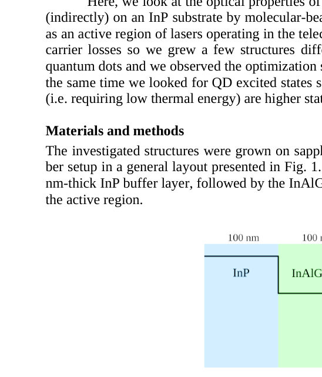
<figcaption class="paper-figure-caption"><b>Fig 1.</b> Fig. 1. General layout of QD structures with schematic conduction band edge</figcaption>
</figure>
<figure class="paper-figure-card">
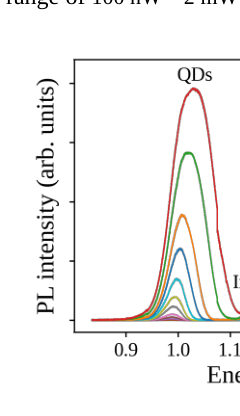
<figcaption class="paper-figure-caption"><b>Fig 2.</b> Fig. 2. Low-temperature PL spectra from structure A for different excitation power values (100 nW – 2 mW)</figcaption>
</figure>
<figure class="paper-figure-card">
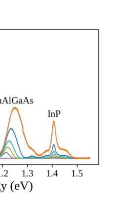
<figcaption class="paper-figure-caption"><b>Fig 3.</b> Fig. 3. Low-temperature PL spectra from structure B for different excitation power values (500 nW – 2 mW)</figcaption>
</figure>
<figure class="paper-figure-card">
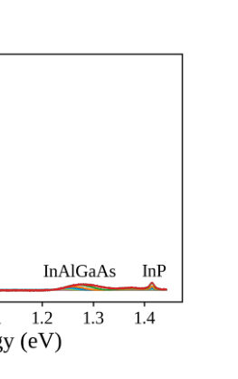
<figcaption class="paper-figure-caption"><b>Fig 4.</b> Fig. 4. Low-temperature PL spectra from structure C for different excitation power values (200 nW - 10 mW)</figcaption>
</figure>
<figure class="paper-figure-card">
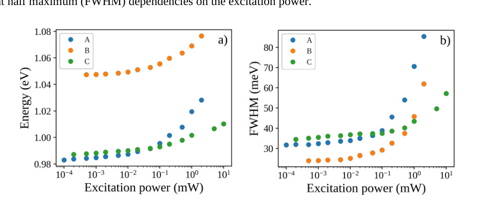
<figcaption class="paper-figure-caption"><b>Fig 5.</b> Fig. 5. Low-temperature QD emission energy a) and FWHM b) dependencies on the excitation power</figcaption>
</figure>
</div>

<p><strong>Summary.</strong> This paper reports on the epitaxial optimization of InAs quantum dots designed for use in O-band telecommunication lasers. Researchers systematically tuned the QD structure—by modifying layer thickness and barrier composition—to redshift the emission into the desired O-band window. Advanced spectroscopy confirmed that these structural changes successfully improved carrier confinement, which is crucial for achieving stable, low-threshold laser operation at high temperatures.</p>
<p><strong>Why it may be interesting.</strong> While primarily experimental, the detailed analysis of energy level separation and thermal stability in QDs is highly relevant to open quantum systems and quantum optics, as it directly addresses the fundamental challenge of maintaining quantum coherence and population inversion at operating temperatures.</p>
<details>
<summary>Detailed structure</summary>
<p><strong>Main problem.</strong> The primary goal is to optimize InAs/InAlGaAs/InP quantum dot (QD) emitters to function as efficient lasers in the O-band telecommunication window (1260–1360 nm).</p>
<p><strong>Main result.</strong> By optimizing the QD structure—specifically increasing the QD thickness and barrier potential—the emission wavelength was successfully redshifted into the O-band while demonstrating improved carrier confinement and reduced spectral shift with excitation power.</p>
<p><strong>Method.</strong> The study employed molecular-beam epitaxy (MBE) for material growth, followed by comprehensive characterization using low-temperature and room-temperature photoluminescence (PL), photoluminescence excitation (PLE), and photoreflectance (PR) spectroscopy.</p>
<p><strong>Model / system.</strong> The physical system is a semiconductor heterostructure consisting of InAs quantum dots embedded within InAlGaAs barriers grown on an InP substrate. The performance relies on controlling the quantum confinement energy levels within these nanostructures.</p>
<p><strong>Key observables.</strong> QD emission wavelength (target O-band), energy separation between ground and excited QD states, spectral shift with excitation power, and the Full Width at Half Maximum (FWHM) of the PL signal.</p>
<p><strong>Important parameters / regimes.</strong> Barrier Al content, QD layer thickness (e.g., 3.4 ML to 4.5 ML), and the energy separation between electronic states (e.g., 120 meV and 60 meV).</p>
<p><strong>Assumptions / limitations.</strong> The analysis assumes that the observed energy separations correspond to thermal energies, indicating good carrier retention at elevated temperatures. The spectral shift with power is analyzed in terms of carrier redistribution effects.</p>
<p><strong>Figures summary.</strong> Figures illustrate PL spectra showing the redshift of emission towards the O-band with structural changes (A to C). PR/PLE spectra are used to quantitatively fit and confirm the energy levels of the QD ground and excited states.</p>
<p><strong>Paper structure.</strong> The paper progresses by identifying the need for O-band emission, presenting initial structures (A, B), demonstrating the optimization path by increasing QD thickness and barrier potential (Structure C), and finally using advanced spectroscopic techniques (PR/PLE) to confirm the improved energy confinement and spectral tuning.</p>
</details>
<details>
<summary>Abstract</summary>
<p>The O-band telecommunication spectral range combines minimal chromatic dispersion with low transmission loss, making it highly suitable for optical communications. Semiconductor telecom lasers utilizing low-dimensional active regions, such as quantum dots, offer low threshold power and high thermal stability. However, long-wavelength quantum dot emitters often suffer from thermal carrier escape through excited states when the energy separation between the ground and excited states is insufficient. Here we demonstrate the optimization of InAs quantum dot emitters grown on InP by molecular-beam epitaxy for O-band laser active regions. By optimizing the design for better carrier capture efficiency and tuning the emission wavelength to the O-band, we show ways of improving the carrier confinement. Absorption spectroscopy on the finalized structure confirms substantial energy separation between the quantum dot ground and excited states, effectively suppressing thermal carrier escape even at elevated temperatures. These results highlight critical design for improving carrier capture and retention in long-wavelength quantum dot lasers.</p>
</details>
<p><sub><a href="#top">↑ back to top</a></sub></p>

<p><a id="paper-2609.32121"></a></p>
<h3 id="temperature-dependent-evolution-of-the-electronic-structure-in-euzn2as2-across-the-neel-transition"><a href="http://arxiv.org/abs/2609.32121v1">Temperature Dependent Evolution of the Electronic Structure in EuZn2As2 across the Neel Transition</a></h3>
<p><strong>Authors:</strong> Milo Sprague, Anup Pradhan Sakhya, Barun Ghosh, Mazharul Islam Mondal, Arun K. Kumay, Himanshu Sheokand, Kapil Gope, Tetiana Romanova, Dariusz Kaczorowski, Arun Bansil, Madhab Neupane<br>
<strong>Type:</strong> both · <strong>Category:</strong> other · <strong>PDF:</strong> <a href="https://arxiv.org/pdf/2609.32121v1">https://arxiv.org/pdf/2609.32121v1</a><br>
<strong>Analysis basis:</strong> full PDF text, analyzed in chunks
<strong>Topic relevance:</strong> <code>Keldysh / 2PI / non-Gaussian methods</code> <strong>1/5</strong> · <code>analog quantum simulation</code> <strong>1/5</strong> · <code>quantum measurements</code> <strong>1/5</strong></p>
<div class="figure-strip-hint">↔ Scroll figures horizontally</div>
<div class="paper-figures-scroll">
<figure class="paper-figure-card">
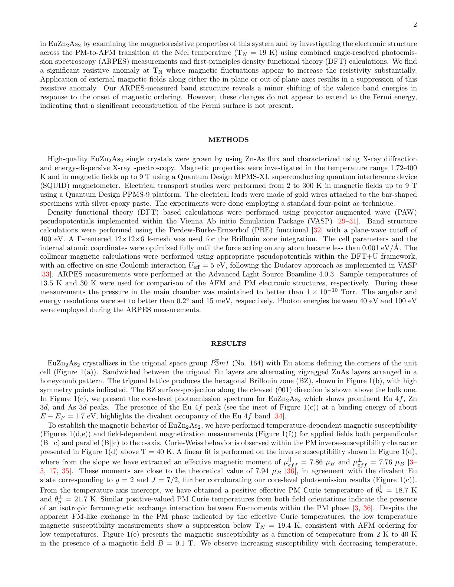
<figcaption class="paper-figure-caption"><b>Fig 1.</b> Low-resolution page preview, page 2</figcaption>
</figure>
<figure class="paper-figure-card">
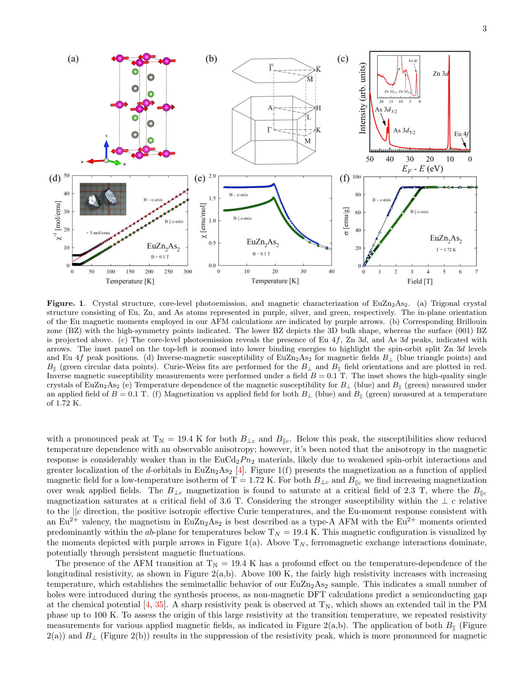
<figcaption class="paper-figure-caption"><b>Fig 2.</b> Low-resolution page preview, page 3</figcaption>
</figure>
<figure class="paper-figure-card">
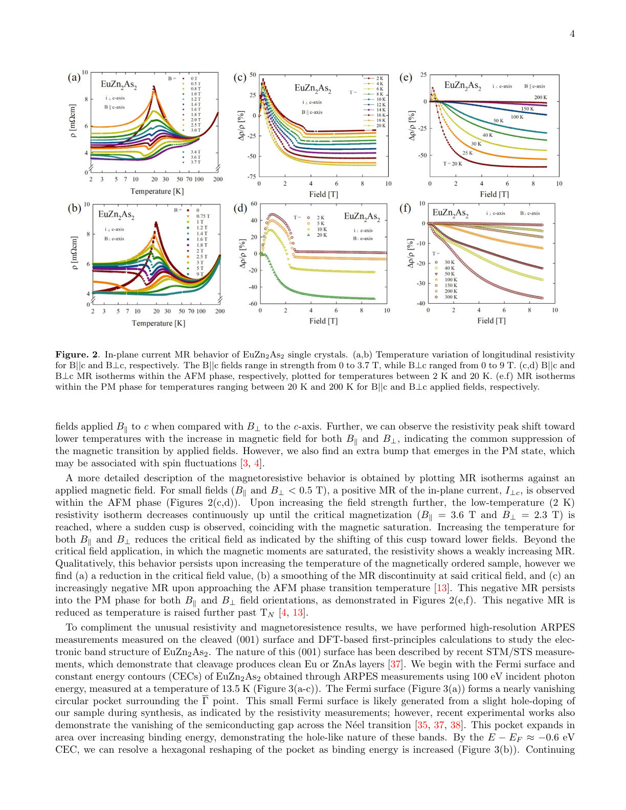
<figcaption class="paper-figure-caption"><b>Fig 3.</b> Low-resolution page preview, page 4</figcaption>
</figure>
<figure class="paper-figure-card">
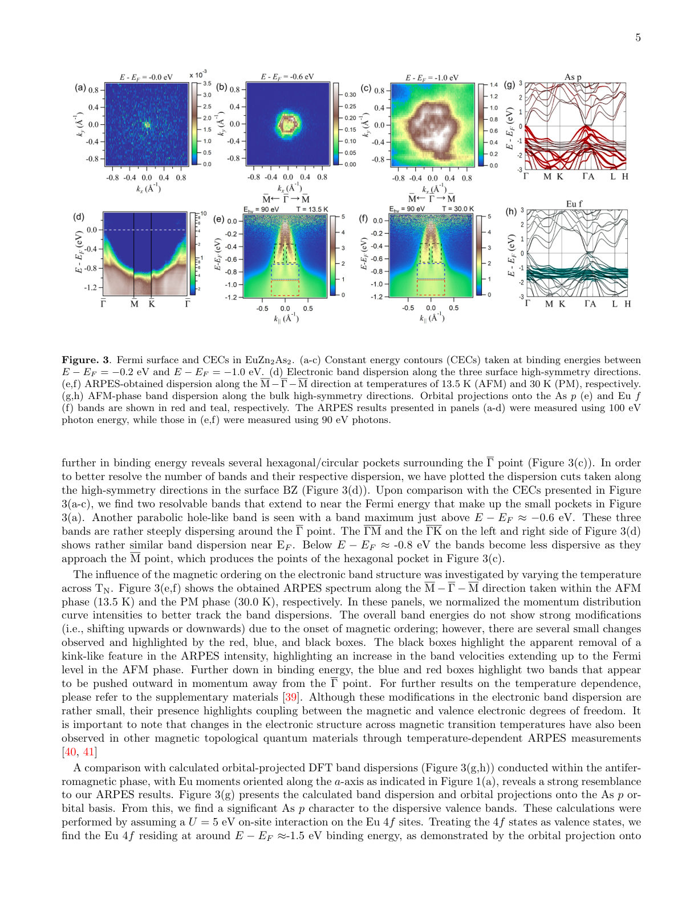
<figcaption class="paper-figure-caption"><b>Fig 4.</b> Low-resolution page preview, page 5</figcaption>
</figure>
<figure class="paper-figure-card">
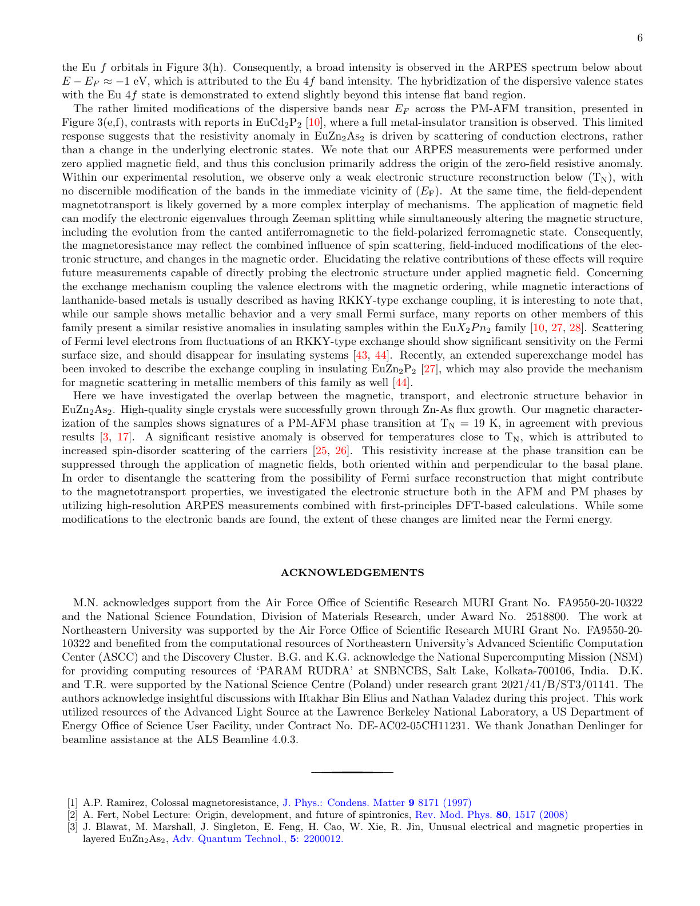
<figcaption class="paper-figure-caption"><b>Fig 5.</b> Low-resolution page preview, page 6</figcaption>
</figure>
</div>

<p><strong>Summary.</strong> This work investigates the origin of a resistivity anomaly in the antiferromagnet EuZn2As2 near its Néel temperature. By combining magnetotransport measurements with ARPES and DFT calculations, the authors argue that the anomaly stems from spin-scattering effects rather than a change in the underlying electronic band structure. This provides a detailed picture of how magnetic ordering influences charge transport in correlated materials.</p>
<p><strong>Why it may be interesting.</strong> While focused on magnetism, the detailed study of electronic structure changes (or lack thereof) across a magnetic phase transition provides insights into spin-charge coupling and scattering mechanisms relevant to strongly correlated electron systems.</p>
<details>
<summary>Detailed structure</summary>
<p><strong>Main problem.</strong> The study investigates the origin of a pronounced resistivity anomaly observed in the antiferromagnetic material EuZn2As2 near its Néel temperature (TN).</p>
<p><strong>Main result.</strong> The transport anomaly is attributed to spin-scattering mechanisms rather than a fundamental reconstruction of the Fermi surface, as evidenced by ARPES measurements.</p>
<p><strong>Method.</strong> The research combines magnetotransport measurements (resistivity, magnetization) with advanced electronic structure probes like Angle-Resolved Photoemission Spectroscopy (ARPES) and first-principles Density Functional Theory (DFT) calculations.</p>
<p><strong>Model / system.</strong> The physical system is EuZn2As2, an antiferromagnetic compound in the EuX2Pn2 family. The analysis compares electronic structure measurements across the magnetic transition from a Paramagnetic (PM) to an Antiferromagnetic (AFM) state.</p>
<p><strong>Key observables.</strong> Resistivity anomaly near TN=19 K, magnetic susceptibility ($\chi$), ARPES spectral weight shifts, and band structure evolution across the magnetic transition.</p>
<p><strong>Important parameters / regimes.</strong> Néel temperature (TN = 19.4 K), applied magnetic fields (in-plane and out-of-plane), and binding energy relative to the Fermi level (E - EF).</p>
<p><strong>Assumptions / limitations.</strong> The interpretation relies on comparing ARPES data with DFT calculations, assuming that observed spectral weight shifts reflect changes in electronic correlations or scattering mechanisms.</p>
<p><strong>Figures summary.</strong> Figures illustrate the crystal structure, magnetic susceptibility vs. T and H, resistivity vs. T and H (showing the anomaly), and ARPES spectra comparing PM and AFM phases, highlighting spectral weight shifts.</p>
<p><strong>Paper structure.</strong> The paper first establishes the magnetotransport anomaly near TN. It then uses ARPES and DFT to probe the electronic structure across this transition, concluding that the lack of Fermi surface reconstruction points to a spin-scattering origin for the resistivity peak.</p>
</details>
<details>
<summary>Abstract</summary>
<p>Magnetoresistive materials have been tremendously important for the development of magnetic memory storage and spintronic devices. Recently, the antiferromagnetic EuX2Pn2 compounds, with X being a transition metal and Pn being a pnictogen, have seen intensive research interest due to their unusual anomalous Hall effect behavior and pronounced resistive anomaly near the Neel temperature (TN). These magnetotransport phenomena have been interpreted in the context of shortranged ferromagnetic Structuations, magnetic polaron formation, canted spin configurations, and temperature dependent metal insulator transitions in the electronic structure. Here, we report the observation of such a pronounced resistivity anomaly in EuZn2As2 near TN = 19 K. We demonstrate the suppression of this anomaly using applied magnetic fields, both in plane and out of plane. To further interpret the origin of the observed transport behavior, we studied the temperature dependent electronic structure using combined angle resolved photoemission spectroscopy (ARPES) and first principles density functional theory (DFT) calculations, which exhibits limited modifications to the bands across TN away from the Fermi energy. This lack of involvement of the electronic structure indicates a spin-scattering origin of the aforementioned transport properties, rather than a reconstruction of the Fermi surface.</p>
</details>
<p><sub><a href="#top">↑ back to top</a></sub></p>

<p><a id="paper-2609.34796"></a></p>
<h3 id="phase-compositions-of-si-oxynitride-a-comprehensive-thermodynamic-modeling-study"><a href="http://arxiv.org/abs/2609.34796v1">Phase compositions of Si oxynitride: A comprehensive thermodynamic modeling study</a></h3>
<p><strong>Authors:</strong> Andrey Sarikov, Mariia Babiichuk, Mariia Voitovych, Sergii V. Mamykin1<br>
<strong>Type:</strong> theory · <strong>Category:</strong> statistical mechanics · <strong>PDF:</strong> <a href="https://arxiv.org/pdf/2609.34796v1">https://arxiv.org/pdf/2609.34796v1</a><br>
<strong>Analysis basis:</strong> full PDF text, analyzed in chunks
<strong>Topic relevance:</strong> <code>Keldysh / 2PI / non-Gaussian methods</code> <strong>1/5</strong> · <code>analog quantum simulation</code> <strong>1/5</strong></p>
<div class="figure-strip-hint">↔ Scroll figures horizontally</div>
<div class="paper-figures-scroll">
<figure class="paper-figure-card">
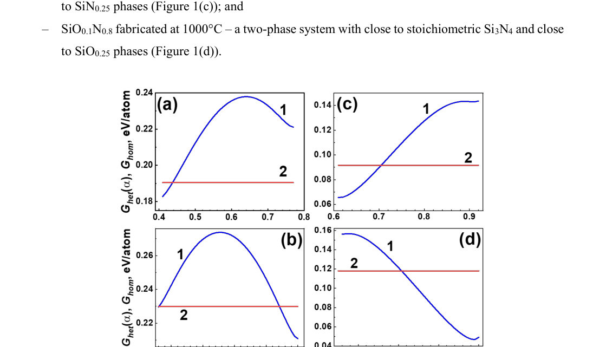
<figcaption class="paper-figure-caption"><b>Fig 1.</b> Figure 1. Gibbs free energy of two-phase (1) and single-phase (2) Si oxynitride: (a) – SiO0.8N0.3, T =</figcaption>
</figure>
<figure class="paper-figure-card">
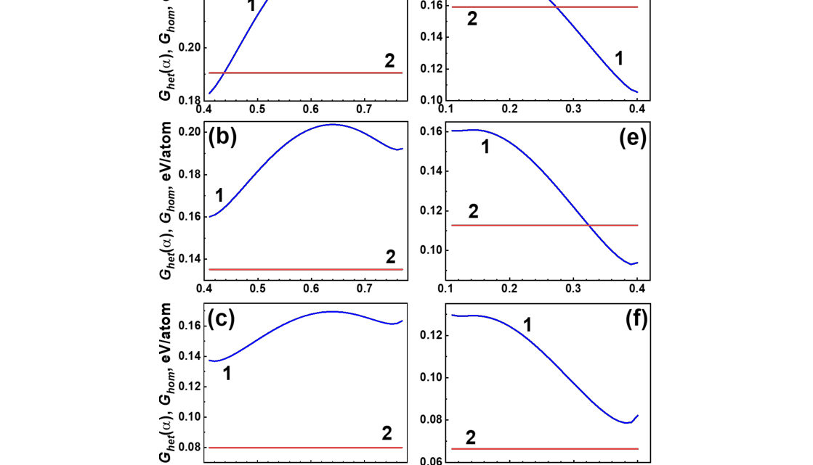
<figcaption class="paper-figure-caption"><b>Fig 2.</b> Figure 2. Gibbs free energy of two-phase (1) and single-phase (2) SiO0.8N0.3 (a – c) and SiO0.2N0.8 (d</figcaption>
</figure>
<figure class="paper-figure-card">
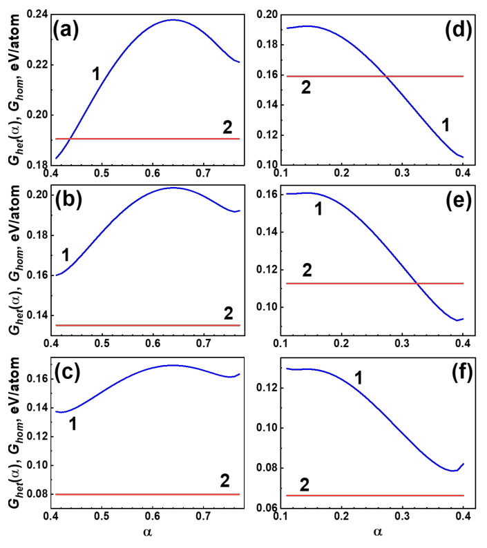
<figcaption class="paper-figure-caption"><b>Fig 3.</b> Figure 3 shows the dependences of the Gibbs free energy on the parameter α for SiOxNy films with x</figcaption>
</figure>
<figure class="paper-figure-card">
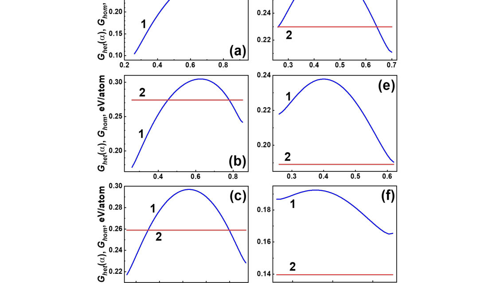
<figcaption class="paper-figure-caption"><b>Fig 4.</b> Figure 3. Gibbs free energy of two-phase (1) and single-phase (2) SiO0.5Ny films at T = 400°C for y</figcaption>
</figure>
<figure class="paper-figure-card">
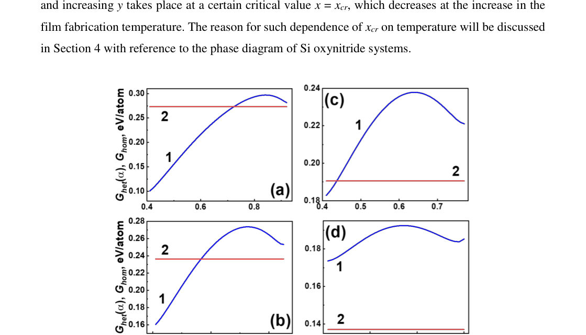
<figcaption class="paper-figure-caption"><b>Fig 5.</b> Figure 4. Gibbs free energy of two-phase (1) and single-phase (2) SiO0.8Ny films at T = 400°C for y</figcaption>
</figure>
</div>

<p><strong>Summary.</strong> This work presents a comprehensive thermodynamic model to predict the stable phase composition of amorphous SiOxNy films. By minimizing the Gibbs free energy, the authors distinguish between single-phase and two-phase states across varying stoichiometry and temperature. The resulting phase diagram provides a predictive tool for tailoring the material's properties for practical applications.</p>
<p><strong>Why it may be interesting.</strong> While focused on materials science, the core methodology—using Gibbs free energy minimization to predict phase transitions based on composition and temperature—is a fundamental concept in statistical mechanics applicable to many complex many-body systems.</p>
<details>
<summary>Detailed structure</summary>
<p><strong>Main problem.</strong> To provide a comprehensive thermodynamic description of the phase formation in amorphous SiOxNy films as a function of chemical composition and fabrication temperature.</p>
<p><strong>Main result.</strong> The study constructs a phase diagram showing single- and two-phase SiOxNy regions, determining the stable phase by minimizing the Gibbs free energy.</p>
<p><strong>Method.</strong> Thermodynamic modeling based on comparing the Gibbs free energy of homogeneous versus two-phase mixtures.</p>
<p><strong>Model / system.</strong> The system is amorphous SiOxNy films, analyzed using the Random Bonding Model (RBM) to describe local structures in both single-phase and two-phase states.</p>
<p><strong>Key observables.</strong> Gibbs free energy (G), phase composition (single-phase vs. two-phase), and critical stoichiometry values.</p>
<p><strong>Important parameters / regimes.</strong> Film chemical composition (SiOxNy stoichiometry indices) and fabrication temperature (T).</p>
<p><strong>Assumptions / limitations.</strong> The analysis compares the Gibbs free energy of a single-phase state against the minimum Gibbs free energy of a two-phase mixture of Si oxide and Si nitride.</p>
<p><strong>Figures summary.</strong> A comprehensive phase diagram is constructed illustrating the single- and two-phase SiOxNy regions as a function of fabrication temperature.</p>
<p><strong>Paper structure.</strong> The paper systematically analyzes the thermodynamic stability by comparing the Gibbs free energy for homogeneous versus heterogeneous (two-phase) states across the entire stoichiometry range, leading to the construction of the phase diagram.</p>
</details>
<details>
<summary>Abstract</summary>
<p>In this work, a comprehensive thermodynamic description of the formation of phases in amorphous SiOxNy (0 &lt;= x &lt;= 2, 0 &lt;= y &lt;= 4/3) films as a function of the film chemical composition and fabrication temperature is presented. Two possible phase states, namely homogeneous single-phase Si oxynitride and two-phase mixture of Si oxide and Si nitride phases, are analyzed in terms of the lowest values of the Gibbs free energy. The characters of the modification of the phase composition upon changing the SiOxNy stoichiometry indices and fabrication temperature are determined. Moreover, characteristic features of the chemical composition of the Si oxide and Si nitride phases in two-phase Si oxynitrides are revealed. Particular attention is given to the thermodynamic origin of the boundaries between different phase states of the SiOxNy films and to determining the critical stoichiometry values separating them. A comprehensive phase diagram indicating single- and two-phase SiOxNy regions as functions of the fabrication temperature is constructed. The peculiarities of the transitions between different SiOxNy phase states, along with underlying mechanisms, are discussed with reference to this phase diagram. The obtained results extend our understanding of the fundamental properties of Si oxynitride films and their dependence on the film fabrication conditions, and may be used for tailoring SiOxNy characteristics for practical applications.</p>
</details>
<p><sub><a href="#top">↑ back to top</a></sub></p>

<p><a id="paper-2609.33046"></a></p>
<h3 id="unifying-magnetic-electrical-and-thermoelectric-responses-in-a-non-collinear-antiferromagnet"><a href="http://arxiv.org/abs/2609.33046v1">Unifying Magnetic, Electrical, and Thermoelectric Responses in a Non-Collinear Antiferromagnet</a></h3>
<p><strong>Authors:</strong> André José, Adrielson Dias, Carlos Eduardo, Giovanna Celly, Luiza Paffer, José Araújo, José Laurentino, Monalisa Cavalcante, José Holanda<br>
<strong>Type:</strong> experiment · <strong>Category:</strong> other · <strong>PDF:</strong> <a href="https://arxiv.org/pdf/2609.33046v1">https://arxiv.org/pdf/2609.33046v1</a><br>
<strong>Analysis basis:</strong> full PDF text, analyzed in chunks
<strong>Topic relevance:</strong> <code>analog quantum simulation</code> <strong>1/5</strong> · <code>quantum measurements</code> <strong>1/5</strong></p>
<div class="figure-strip-hint">↔ Scroll figures horizontally</div>
<div class="paper-figures-scroll">
<figure class="paper-figure-card">
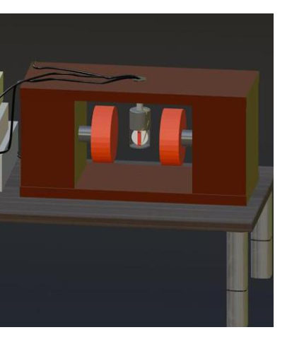
<figcaption class="paper-figure-caption"><b>Fig 1.</b> Figure 1: Experimental configuration employed for longitudinal magneto-optical Kerr</figcaption>
</figure>
<figure class="paper-figure-card">
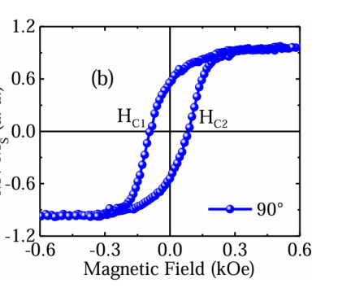
<figcaption class="paper-figure-caption"><b>Fig 2.</b> Figure 2: Longitudinal MOKE hysteresis loops measured with the magnetic field</figcaption>
</figure>
<figure class="paper-figure-card">
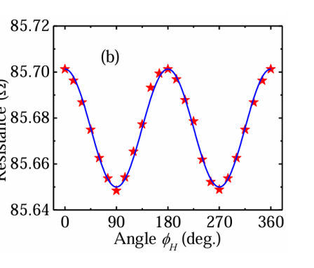
<figcaption class="paper-figure-caption"><b>Fig 3.</b> Figure 3: (a) Anisotropic magnetoresistance (AMR) measured with the magnetic field</figcaption>
</figure>
<figure class="paper-figure-card">
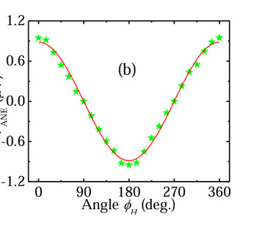
<figcaption class="paper-figure-caption"><b>Fig 4.</b> Figure 4: (a) Anomalous Nernst voltage as a function of magnetic field under ΔTz=10</figcaption>
</figure>
<figure class="paper-figure-card">
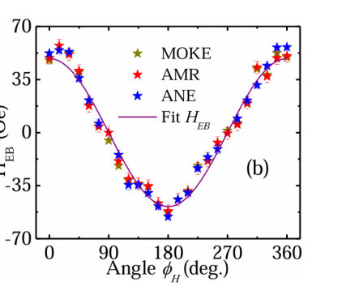
<figcaption class="paper-figure-caption"><b>Fig 5.</b> Figure 5: (a) Anomalous Nernst voltage as a function of the out-of-plane temperature</figcaption>
</figure>
</div>

<p><strong>Summary.</strong> This work investigates how non-collinear antiferromagnets can simultaneously control magnetic, electrical, and thermoelectric properties in a bilayer system. By measuring the same interfacial magnetic coupling using MOKE, AMR, and ANE, the authors prove that the coupling is robust and dictates multiple functionalities. This establishes these materials as promising platforms for advanced spintronic and spin-caloritronic devices.</p>
<p><strong>Why it may be interesting.</strong> While not directly focused on quantum information, the concept of coupling multiple macroscopic physical responses (magnetism, charge, heat) via interfacial symmetry breaking is highly relevant to designing novel quantum devices and understanding emergent quantum phenomena in engineered materials.</p>
<details>
<summary>Detailed structure</summary>
<p><strong>Main problem.</strong> The study aims to unify the understanding of how magnetic, electrical, and thermoelectric responses are coupled and controlled within non-collinear antiferromagnets.</p>
<p><strong>Main result.</strong> The authors demonstrated that the interfacial magnetic symmetry imposed by the non-collinear antiferromagnet dictates the exchange-bias imprint consistently across three independent measurements: MOKE, AMR, and ANE.</p>
<p><strong>Method.</strong> The research utilized a heterostructure ($  ext{IrMn}_3/    ext{Py}$) and measured three distinct physical responses: longitudinal MOKE (magnetization reversal), AMR (charge transport), and ANE (thermoelectric voltage generation).</p>
<p><strong>Model / system.</strong> The physical platform is an $   ext{IrMn}_3$ (non-collinear AFM) layer coupled to a Permalloy (Py) ferromagnet. The non-collinear nature of $   ext{IrMn}_3$ is key, allowing it to actively control multiple functionalities.</p>
<p><strong>Key observables.</strong> Unidirectional field shift ($  ext{H}_{    ext{EB}}$) measured consistently across MOKE, AMR, and ANE; the anomalous Nernst coefficient ($\alpha_N$).</p>
<p><strong>Important parameters / regimes.</strong> The exchange-bias field magnitude ($\approx 50 	ext{ Oe}$) and its consistent angular dependence ($\cos\phi_H$).</p>
<p><strong>Assumptions / limitations.</strong> The analysis assumes that the $  ext{IrMn}_3$ layer acts as a robust, symmetry-breaking, and active platform, rather than just a passive pinning layer.</p>
<p><strong>Figures summary.</strong> Figures illustrate MOKE hysteresis loops showing angular dependence of the exchange-bias field, AMR curves showing angle dependence, and ANE voltage measurements confirming the field shift and angular dependence across all three techniques.</p>
<p><strong>Paper structure.</strong> The paper establishes the theoretical framework of non-collinear AFMs, presents the $  ext{IrMn}_3/    ext{Py}$ heterostructure, and then systematically measures and compares the exchange-bias signatures using MOKE, AMR, and ANE, culminating in the demonstration of multifunctional coupling.</p>
</details>
<details>
<summary>Abstract</summary>
<p>Non-collinear antiferromagnets offer unconventional routes for controlling magnetic, electrical, and thermoelectric responses through their complex spin configurations and interfacial symmetry. Here, we detect exceptional interfacial properties arising from a non-collinear antiferromagnet by demonstrating a robust and quantitatively consistent exchange-bias response in an IrMn$_3$/Py heterostructure. The system consists of a 10 nm IrMn$_3$ layer coupled to a 5 nm permalloy (Py) film. Longitudinal magneto-optical Kerr effect (MOKE), anisotropic magnetoresistance (AMR), and anomalous Nernst effect (ANE) measurements independently reveal the same unidirectional field shift of approximately 50 Oe, together with a consistent cosine angular dependence. The simultaneous observation of these signatures establishes a direct correspondence between the interfacial magnetic symmetry imposed by the non-collinear antiferromagnet and the responses of the adjacent ferromagnet. This symmetry is manifested consistently in magnetization reversal, charge transport, and thermally driven voltage generation, demonstrating that the exchange-bias imprint is not restricted to a single experimental observable. Our results reveal a coherent multifunctional response of IrMn$_3$/Py and extend the conventional understanding of exchange bias beyond collinear antiferromagnetic systems. More broadly, they demonstrate the potential of non-collinear antiferromagnets as platforms for coupling magnetic, electrical, and thermoelectric functionalities in spintronic and spin-caloritronic devices.</p>
</details>
<p><sub><a href="#top">↑ back to top</a></sub></p>

<p><a id="paper-2609.32442"></a></p>
<h3 id="absolute-and-relative-invariants-for-low-dimensional-topological-insulators"><a href="http://arxiv.org/abs/2609.32442v1">Absolute and relative invariants for low-dimensional topological insulators</a></h3>
<p><strong>Authors:</strong> Federico Manzoni, Domenico Monaco, Gabriele Peluso<br>
<strong>Type:</strong> theory · <strong>Category:</strong> other · <strong>PDF:</strong> <a href="https://arxiv.org/pdf/2609.32442v1">https://arxiv.org/pdf/2609.32442v1</a><br>
<strong>Analysis basis:</strong> full PDF text, analyzed in chunks
<strong>Topic relevance:</strong> <code>analog quantum simulation</code> <strong>1/5</strong></p>
<div class="figure-strip-hint">↔ Scroll figures horizontally</div>
<div class="paper-figures-scroll">
<figure class="paper-figure-card">
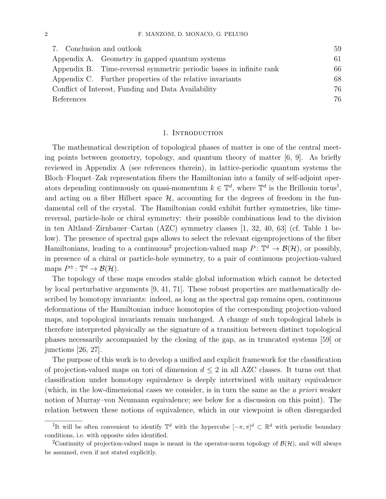
<figcaption class="paper-figure-caption"><b>Fig 1.</b> Low-resolution page preview, page 2</figcaption>
</figure>
<figure class="paper-figure-card">
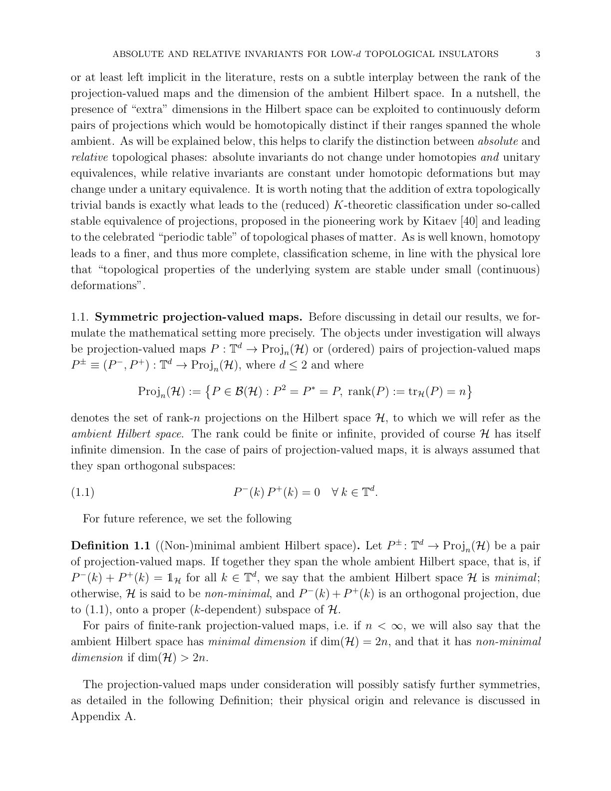
<figcaption class="paper-figure-caption"><b>Fig 2.</b> Low-resolution page preview, page 3</figcaption>
</figure>
<figure class="paper-figure-card">

<figcaption class="paper-figure-caption"><b>Fig 3.</b> Low-resolution page preview, page 4</figcaption>
</figure>
<figure class="paper-figure-card">

<figcaption class="paper-figure-caption"><b>Fig 4.</b> Low-resolution page preview, page 5</figcaption>
</figure>
<figure class="paper-figure-card">

<figcaption class="paper-figure-caption"><b>Fig 5.</b> Low-resolution page preview, page 6</figcaption>
</figure>
</div>

<p><strong>Summary.</strong> This paper provides a rigorous mathematical classification scheme for topological insulators in low dimensions ($d \le 2$) by analyzing projection-valued maps on the torus. It compares three types of mathematical equivalence—Murray-von Neumann, unitary, and homotopy—to determine which invariants (like Chern numbers or $\mathbb{Z}_2$ indices) are robust and define the physical phase. The result unifies the geometric understanding of topological invariants across different symmetry classes.</p>
<p><strong>Why it may be interesting.</strong> This work provides deep mathematical machinery connecting fundamental concepts in topology (K-theory, invariants) directly to the classification of gapped quantum phases, which is crucial for understanding topological quantum matter.</p>
<details>
<summary>Detailed structure</summary>
<p><strong>Main problem.</strong> The paper aims to develop a unified mathematical framework for classifying projection-valued maps on low-dimensional tori ($d \le 2$) subject to Altland-Zirnbauer-Cartan (AZC) symmetries.</p>
<p><strong>Main result.</strong> It establishes that for $d=2$, topological obstructions manifest as absolute invariants (like Chern numbers or $\mathbb{Z}_2$ indices) that characterize the equivalence of the maps under Murray-von Neumann and unitary relations.</p>
<p><strong>Method.</strong> The analysis involves comparing three notions of equivalence (Murray-von Neumann, unitary, and homotopy) by constructing symmetric bases for the projection ranges under pseudo-periodicity constraints.</p>
<p><strong>Model / system.</strong> The system models topological insulators, described mathematically by continuous projection-valued maps $P: T^d 	o 	ext{Projn}(H)$, where $T^d$ is the $d$-dimensional torus and $H$ is the ambient Hilbert space.</p>
<p><strong>Key observables.</strong> Chern number ($\mathbb{Z}$), Fu-Kane-Mele invariant ($\mathbb{Z}_2$), and relative topological phases.</p>
<p><strong>Important parameters / regimes.</strong> Dimension $d$ (specifically $d=1$ and $d=2$), and the symmetry classes defined by AZC symmetries (Time-reversal, Particle-hole, Chiral).</p>
<p><strong>Assumptions / limitations.</strong> The analysis assumes the continuity of the projection-valued maps in the operator-norm topology and relies on the structure imposed by the symmetries.</p>
<p><strong>Figures summary.</strong> The notes reference Table 1 (AZC classification) and Table 2 (listing specific invariants like Chern numbers and FKM for $d=2$ equivalence), which summarize the classification results.</p>
<p><strong>Paper structure.</strong> The paper progresses by first defining the problem in terms of projection maps and symmetries, then analyzing the implications of periodicity constraints to derive the necessary invariants, and finally comparing how different equivalence relations (Murray-von Neumann vs. Homotopy) yield different types of invariants (absolute vs. relative).</p>
</details>
<details>
<summary>Abstract</summary>
<p>[An extended abstract is provided in-text]   Motivated by topological insulators, this paper analyzes classification schemes for projection-valued maps on $d$-dimensional tori, $d \le 2$, subject to Altland-Zirnbauer-Cartan (AZC) symmetries (time-reversal, particle-hole, and chiral). The main objective is to compare three notions of equivalence for these maps: Murray-von Neumann, unitary, and homotopy equivalence. The analysis relies on constructing symmetric bases for the projection ranges under a pseudo-periodicity constraint, where select basis vectors pick up a phase when looped around the torus. If $d=1$, fully periodic symmetric bases exist across all AZC classes. If $d=2$, topological obstructions appear as non-trivial phases characterized by $\mathbb{Z}$ (Chern number) or $\mathbb{Z}_2$ (Fu-Kane-Mele) invariants. These serve as absolute invariants that classify both Murray-von Neumann and unitary equivalences. For homotopy equivalence, the behavior depends on the ambient Hilbert space: if this has non-minimal dimension, homotopy equivalence reduces directly to unitary equivalence, while in minimal ambient spaces additional relative homotopy invariants emerge. Their precise values change under unitary conjugation, leaving only relative topological phases between maps well-defined. Ultimately, this provides a unified geometric framework for gapped quantum systems in low dimensions, demonstrating how distinct equivalence relations generate specific absolute and relative topological invariants.</p>
</details>
<p><sub><a href="#top">↑ back to top</a></sub></p>

<p><a id="paper-2609.35566"></a></p>
<h3 id="ai-assisted-identification-of-magnetic-orders-and-skyrmions"><a href="http://arxiv.org/abs/2609.35566v1">AI-Assisted Identification of Magnetic Orders and Skyrmions</a></h3>
<p><strong>Authors:</strong> Haowen Yang, Sophia Huerta, Yingying Wu<br>
<strong>Type:</strong> both · <strong>Category:</strong> disordered systems and neural networks · <strong>PDF:</strong> <a href="https://arxiv.org/pdf/2609.35566v1">https://arxiv.org/pdf/2609.35566v1</a><br>
<strong>Analysis basis:</strong> full PDF text, analyzed in chunks
<strong>Topic relevance:</strong> <code>analog quantum simulation</code> <strong>1/5</strong></p>
<div class="figure-strip-hint">↔ Scroll figures horizontally</div>
<div class="paper-figures-scroll">
<figure class="paper-figure-card">

<figcaption class="paper-figure-caption"><b>Fig 1.</b> Figure 1: Dataset curation and pre-processing pipeline and feature-space visualization. (a) Overview of the magnetic-material data acquisition process. Materials are retrieved from the Materials Project, and magnetic configurations are reconstructed from available site-resolved moments. Missing task-level mo- ments are supplemented by targeted material-structure recovery for Materials Project AFM and FiM can- didates. The resulting curated magnetic-material dataset includes compositional, structural, magnetic-state, and magnetization-related information used for subsequent machine-learning tasks. (b) Data-processing and task-specific dataset construction workflow. The curated magnetic...</figcaption>
</figure>
<figure class="paper-figure-card">

<figcaption class="paper-figure-caption"><b>Fig 2.</b> Figure 2: LightGBM framework and performance for FM/AFM magnetic-order classification. (a) Schematic of the magnetic-order classification pipeline. Structure-derived descriptors are constructed from crystal structure, composition, elemental properties, and geometric information, yielding a 136-dimensional feature vector without explicitly including magnetic descriptors. A LightGBM ensemble is optimized using five-fold cross-validation grouped by chemical system and Optuna hyperparameter search. The selected model and decision threshold are then frozen, retrained on the full development set, and evaluated on an iso- lated test set of 4,357 materials. The model outputs the probability of...</figcaption>
</figure>
<figure class="paper-figure-card">

<figcaption class="paper-figure-caption"><b>Fig 3.</b> Figure 3: Residual multilayer perceptron framework and performance for magnetization prediction. (a) Schematic of the magnetization-regression pipeline. A 464-dimensional feature vector is constructed from compositional, structural, electronic, and magnetic-task initial-state information. Numerical features are median-imputed with missing-value indicators and standardized, while categorical features are imputed and one-hot encoded. The processed descriptors are passed to a weighted RobustLog residual multilayer perceptron (MLP) consisting of an initial 512-unit linear layer, three residual blocks, and a regression head with dimensions 512 →256 →128 →1. The model is trained to predict the...</figcaption>
</figure>
<figure class="paper-figure-card">

<figcaption class="paper-figure-caption"><b>Fig 4.</b> Figure 4: Magnetic image processing and phase-reconstruction results for skyrmion-like texture identifica- tion. (a) Simulated magnetic image and enlarged region of interest showing labyrinth-like magnetic con- trast. (b) Intensity line profiles extracted under different cutoff wave-vector values qc, showing how filtering affects image contrast and spatial oscillation. (c) Reconstructed magnetic phase shift before cutoff optimiza- tion, shown as grayscale phase contrast and corresponding color phase map. (d) Crest signal-to-noise ratio (SNR) as a function of cutoff wave vector qc, where the optimal value is identified as qc = 0.016 nm−1. (e) Magnetic phase-shift reconstruction using the...</figcaption>
</figure>
</div>

<p><strong>Summary.</strong> This work presents an AI-assisted framework to accelerate the discovery of 2D magnetic materials by classifying magnetic orders (FM/AFM) and predicting magnetization. It combines machine learning models trained on structural and electronic data with physical diagnostics derived from DFT calculations. The framework is highly useful for prioritizing candidates for advanced spintronic applications.</p>
<p><strong>Why it may be interesting.</strong> The integration of advanced ML techniques (LightGBM, MLP) with condensed matter physics problems like magnetic ordering and skyrmion prediction provides a powerful, data-driven tool for materials discovery, which is highly relevant to understanding complex many-body ground states.</p>
<details>
<summary>Detailed structure</summary>
<p><strong>Main problem.</strong> The paper addresses the challenge of efficiently identifying and characterizing exotic magnetic orders and predicting magnetization in 2D magnetic materials for spintronic applications.</p>
<p><strong>Main result.</strong> The developed machine-learning framework achieved a high classification accuracy (93.6%) for magnetic order and a low mean absolute error (0.686 μB/formula unit) for magnetization prediction.</p>
<p><strong>Method.</strong> It employs a two-part machine learning approach: a LightGBM model for classifying magnetic order (FM vs. AFM) and a residual MLP for quantitative magnetization prediction, using structural, compositional, and electronic descriptors.</p>
<p><strong>Model / system.</strong> The physical system is 2D magnetic materials exhibiting various magnetic orders (FM, AFM). The analysis relies on site-resolved magnetic moments derived from DFT calculations, which are then used to train ML models.</p>
<p><strong>Key observables.</strong> Magnetic order (FM/AFM), magnetization magnitude ($\mu_B$/f.u.), normalized alignment parameter ($A$), and cancellation parameter ($C$).</p>
<p><strong>Important parameters / regimes.</strong> The analysis uses descriptors derived from the Materials Project, and simulations involve parameters like exchange anisotropy ($A_{ex}$), DMI, and temperature.</p>
<p><strong>Assumptions / limitations.</strong> The magnetic labels are reconstructed from final DFT magnetic configurations rather than initial assumptions, and the ML targets are calculated at zero-temperature ground states.</p>
<p><strong>Figures summary.</strong> The notes mention comparisons of ML model performance (Table 1) and the simulation of magnetic textures (e.g., skyrmions) via micromagnetic images.</p>
<p><strong>Paper structure.</strong> The paper first establishes diagnostic parameters ($A, C, B$) from local moments to define magnetic order. It then develops and validates ML models for classification (LightGBM) and regression (MLP) using structure-only descriptors. Finally, it applies the framework to simulate and analyze magnetic textures like skyrmions.</p>
</details>
<details>
<summary>Abstract</summary>
<p>Exotic magnetic orders in two-dimensional (2D) materials are attracting huge interest for energy-efficient spintronic applications, yet realizing robust high-temperature van der Waals antiferromagnets and topological magnetic states remains challenging. In this work, we develop a machine-learning framework for identifying magnetic orders and predicting magnetization using structural, compositional, and electronic information derived from the Materials Project. Fixed-length descriptors are constructed for two complementary tasks: ferromagnetic (FM) versus antiferromagnetic (AFM) classification and quantitative magnetization prediction. Magnetic order is classified using a LightGBM model trained on structure-derived descriptors without explicitly including magnetic descriptors. Five-fold cross-validation grouped by chemical system is used to reduce chemical leakage, together with hyperparameter and classification-threshold optimization. On an isolated test set, the classifier achieves a balanced accuracy of 93.6% in the testing set. Magnetization is predicted using a residual multilayer perceptron with compositional, structural, electronic, and task-specific initial-state descriptors. A logarithmic target transformation and robust weighted loss are used to account for the broad magnetization distribution, while three independently trained models are combined into a final ensemble. The model achieves a mean absolute error of 0.686 μB/formula unit. For selected magnetic candidates, simulated magnetic imaging and phase-reconstruction analysis are further used to investigate magnetization textures and skyrmion-like features through normalized magnetization profiles and topological charge. This framework provides an efficient approach for screening 2D magnetic materials and prioritizing candidates for antiferromagnetic and topological spintronic applications.</p>
</details>
<p><sub><a href="#top">↑ back to top</a></sub></p>

<p><a id="paper-2609.32173"></a></p>
<h3 id="enhancing-magnonic-frequency-combs-via-geometric-nonlinearity"><a href="http://arxiv.org/abs/2609.32173v1">Enhancing magnonic frequency combs via geometric nonlinearity</a></h3>
<p><strong>Authors:</strong> Yushun Fang, Weichao Yu<br>
<strong>Type:</strong> theory · <strong>Category:</strong> other · <strong>PDF:</strong> <a href="https://arxiv.org/pdf/2609.32173v1">https://arxiv.org/pdf/2609.32173v1</a><br>
<strong>Analysis basis:</strong> full PDF text, analyzed in chunks
<strong>Topic relevance:</strong> <code>driven-dissipative phase transition</code> <strong>1/5</strong></p>
<div class="figure-strip-hint">↔ Scroll figures horizontally</div>
<div class="paper-figures-scroll">
<figure class="paper-figure-card">

<figcaption class="paper-figure-caption"><b>Fig 1.</b> Figure 1. Geometric nonlinearity and Floquet driving. (a),(b) Constraint-induced geometric nonlinearity: a rigid-rod pendulum confined to a circular arc (red dashed curve) and a classical magnetic moment confined to the Bloch sphere by |m| = 1 (red dashed surface). (c)–(e) Conventional optical, longitudinal magnonic, and transverse magnonic Floquet driving; in (e), the unit-norm constraint converts the transverse drive into an effective longitudinal modulation. (f)–(h) Corresponding sideband intensities, whose amplitudes are proportional to Bessel functions Jn (n-th order): optical ∼Jn(Erf); longitudinal ∼Jn(hd) with spacing ωd; transverse geometric ∼Jn(h2 d) with spacing 2ωd.</figcaption>
</figure>
<figure class="paper-figure-card">

<figcaption class="paper-figure-caption"><b>Fig 2.</b> Figure 2. Comparison between theoretical predictions and numerical simulations for the transverse Floquet driving scheme. (a) Evolution of the MFC with increasing driving amplitude. (b) Intensity compar- ison for the first three comb teeth.</figcaption>
</figure>
<figure class="paper-figure-card">

<figcaption class="paper-figure-caption"><b>Fig 3.</b> Figure 3. Floquet driving with circularly polarized fields. (a) Repe- tition frequency versus the second driving frequency, with opposite helicities giving the sum frequency and same helicities giving the dif- ference frequency. (b) MFC spectra for selected configurations. (c) Comb spectrum versus θ under two drives with constant total inten- sity. (d) Comb spectrum versus ϕ under a single drive.</figcaption>
</figure>
<figure class="paper-figure-card">

<figcaption class="paper-figure-caption"><b>Fig 4.</b> Figure 4. Comparison of spectral flatness. (a) Spectral roll-off rate R as a function of repetition frequency under linearly polarized driv- ing. (b) Variation of R for two equal-intensity circularly polarized drives. (c) Flatness performance comparison among different MFC generation mechanisms.</figcaption>
</figure>
<figure class="paper-figure-card">

<figcaption class="paper-figure-caption"><b>Fig 5.</b> Figure 4(a) shows R versus repetition frequency under lin- early polarized driving at different drive amplitudes. Devia- tions are due to interference. A higher drive amplitude leads to a larger R (closer to zero), i.e., a smaller |R|, indicating enhanced flatness. Figure 4(b) varies f1 while sweeping the second frequency. R increases toward zero with f1, indicating enhanced flatness. This behavior arises because a higher f1 raises the overall driving frequency, so that the low-frequency approximation gradually breaks down and higher-order non- linear interactions are activated, which flatten the spectrum. Finally, we benchmark against other MFC schemes. In Fig. 4(c), dashed lines are our...</figcaption>
</figure>
</div>

<p><strong>Summary.</strong> This work demonstrates that the geometric nonlinearity arising from the unit-norm constraint of magnetization can be harnessed to generate magnonic frequency combs (MFCs). By employing transverse Floquet engineering, the authors show this mechanism bypasses the need for high pump power thresholds associated with traditional nonlinear methods. This provides a new, robust theoretical foundation for enhancing the performance of magnonic frequency comb sources.</p>
<p><strong>Why it may be interesting.</strong> The use of geometric constraints to engineer nonlinear dynamics is a powerful concept applicable across many physical systems, offering a mechanism to generate complex quantum states or spectral features without relying solely on high-order interaction terms.</p>
<details>
<summary>Detailed structure</summary>
<p><strong>Main problem.</strong> The paper aims to enhance magnonic frequency combs (MFCs) by utilizing the geometric nonlinearity inherent in magnetic systems, thereby overcoming limitations associated with high power thresholds and momentum conservation found in previous methods.</p>
<p><strong>Main result.</strong> Geometric nonlinearity, derived from the unit-norm constraint of magnetization, can generate MFCs by converting a transverse drive into an effective longitudinal parametric modulation, enabling low-threshold comb generation.</p>
<p><strong>Method.</strong> The theoretical framework employs transverse Floquet engineering, applying the Holstein-Primakoff transformation and solving the resulting equations using the Floquet Green's function.</p>
<p><strong>Model / system.</strong> The system is based on magnetic materials described by a Hamiltonian involving the magnetization vector constrained to the unit sphere. The dynamics are modeled using the Landau-Lifshitz-Gilbert equation and analyzed via magnon operators.</p>
<p><strong>Key observables.</strong> Sideband spacing ($2\omega_d$), modulation amplitude ($V$), spectral flatness ($R$), and the emergence of sidebands proportional to Bessel functions $J_n(eta)$.</p>
<p><strong>Important parameters / regimes.</strong> The analysis is performed in the low-frequency limit ($\omega_d \ll \omega_k$), and the modulation amplitude scales quadratically with the driving field ($h_d^2$).</p>
<p><strong>Assumptions / limitations.</strong> The derivation relies on the mean-field approximation for the four-operator interaction, and the analysis assumes the low-frequency limit.</p>
<p><strong>Figures summary.</strong> Figures illustrate the geometric nonlinearity mechanism, the sideband spacing resulting from transverse driving ($2\omega_d$), and comparisons between theoretical predictions and micromagnetic simulations.</p>
<p><strong>Paper structure.</strong> The paper progresses from identifying the limitations of dynamic nonlinearity to introducing the geometric nonlinearity mechanism via transverse Floquet engineering. It derives the effective two-magnon modulation, calculates the sideband response, and validates the results using both analytical theory and micromagnetic simulations.</p>
</details>
<details>
<summary>Abstract</summary>
<p>Magnonic frequency combs (MFCs) generated via internal magnetic nonlinearities have exhibited rich physics beyond their optical counterparts. However, existing approaches rely on dynamic nonlinearity, which typically demands high power thresholds and stringent momentum conservation. Here we show that the geometric nonlinearity intrinsic to magnetic systems, originating from the unit-norm constraint of the magnetization vector, can serve as an independent nonlinear resource for MFC generation. Through transverse Floquet engineering, this geometric constraint converts a transverse drive into a longitudinal parametric modulation. In the low-frequency limit, the four-particle process reduces to an effective two-magnon modulation, enabling low-threshold comb generation in the linear regime, with the modulation amplitude scaling quadratically with the driving field and enhanced flatness arising from geometric harmonics. These results provide a deeper understanding of frequency combs and magnon nonlinear interactions, and offer a new theoretical foundation for enhancing MFC performance.</p>
</details>
<p><sub><a href="#top">↑ back to top</a></sub></p>

<p><a id="paper-2609.32372"></a></p>
<h3 id="helicity-controlled-hall-transport-in-hybrid-topological-magnetic-textures"><a href="http://arxiv.org/abs/2609.32372v1">Helicity-Controlled Hall Transport in Hybrid Topological Magnetic Textures</a></h3>
<p><strong>Authors:</strong> Anton V. Hlushchenko, Julia Kharlan, Mykhailo I. Bratchenko, Aleksei V. Chechkin, Jarosław W. Kłos, Oleg A. Tretiakov<br>
<strong>Type:</strong> theory · <strong>Category:</strong> other · <strong>PDF:</strong> <a href="https://arxiv.org/pdf/2609.32372v1">https://arxiv.org/pdf/2609.32372v1</a><br>
<strong>Analysis basis:</strong> full PDF text, analyzed in chunks
<strong>Topic relevance:</strong> <code>analog quantum simulation</code> <strong>1/5</strong></p>
<div class="figure-strip-hint">↔ Scroll figures horizontally</div>
<div class="paper-figures-scroll">
<figure class="paper-figure-card">

<figcaption class="paper-figure-caption"><b>Fig 1.</b> Figure 1: Schematic illustration of the proposed spin-space transformation framework for gen- erating the complete family of hybrid topological magnetic textures. The red frame highlights the reference N´eel skyrmion, which serves as the starting point for the transformations. The four columns present the families of bimerons, skyrmions, antiskyrmions, and antibimerons, while the three rows correspond to the N´eel (η = 0), intermediate (η = π/4), and Bloch (η = π/2) config- urations. The vertical arrows denote the helicity rotation Rz(±η), which continuously generates hybrid magnetic textures with arbitrary helicity within each family. The horizontal arrows denote the spin-space rotation...</figcaption>
</figure>
<figure class="paper-figure-card">

<figcaption class="paper-figure-caption"><b>Fig 2.</b> Figure 2: Dependence of the longitudinal (vx) and transverse (vy) velocity components on the helic- ity angle η for (a) hybrid skyrmions, (b) hybrid bimerons, (c) hybrid antiskyrmions, and (d) hybrid antibimerons. Symbols represent the micromagnetic simulation results, while solid and dashed lines show the corresponding predictions of the generalized Thiele equation for vx and vy, respectively. The theoretical velocity magnitude is VTh = 41.56 m/s, while the gyrotropic Hall angle of the canonical texture is θ(0) H = −71.4◦for skyrmions and bimerons and θ(0) H = +71.4◦for antiskyrmions and antibimerons. The relative root-mean-square deviation between the micromagnetic and the- oretical...</figcaption>
</figure>
</div>

<p><strong>Summary.</strong> This work introduces a unified theoretical framework to study hybrid topological magnetic textures, treating helicity as a key geometric control parameter. By analyzing the dynamics using the generalized Thiele equation, the authors demonstrate that helicity can deterministically tune the Hall angle, thereby enabling programmable and highly controllable spin-current transport. The results are validated through comparison with micromagnetic simulations.</p>
<p><strong>Why it may be interesting.</strong> While focused on magnetism, the concept of using a geometric parameter (helicity) to control a transport response (Hall angle) via an equation of motion (Thiele equation) is analogous to controlling quantum system responses using geometric phases or topological invariants.</p>
<details>
<summary>Detailed structure</summary>
<p><strong>Main problem.</strong> The primary goal is to overcome the inherent Hall effect that limits the efficiency and controllability of transporting topological magnetic textures driven by spin currents.</p>
<p><strong>Main result.</strong> The study establishes helicity ($\eta$) as a versatile geometric control parameter, allowing for the deterministic tuning, complete suppression, or precise steering of the Hall angle during texture transport.</p>
<p><strong>Method.</strong> The authors combine analytical theory, utilizing a generalized Thiele equation derived from a unified spin-space transformation framework, with micromagnetic simulations.</p>
<p><strong>Model / system.</strong> The system involves hybrid topological magnetic textures (skyrmions, bimerons, etc.) whose dynamics are governed by micromagnetic energy functionals incorporating exchange, anisotropy, and Dzyaloshinskii–Moriya interaction (DMI).</p>
<p><strong>Key observables.</strong> Hall angle ($  heta_H$), longitudinal and transverse velocities ($v_x, v_y$), and the dependence of transport on helicity ($\eta$).</p>
<p><strong>Important parameters / regimes.</strong> Helicity ($\eta$), topological charge ($Q$), and the material parameters governing the DMI and anisotropy.</p>
<p><strong>Assumptions / limitations.</strong> The analysis relies on the rigid-body approximation for dynamics and, in some derivations, an isotropic approximation for the dissipative tensor.</p>
<p><strong>Figures summary.</strong> Figures illustrate the spin-space transformation framework generating various hybrid textures, and show the dependence of velocity components on helicity, comparing analytical Thiele equation predictions with micromagnetic simulation results.</p>
<p><strong>Paper structure.</strong> The paper systematically develops a unified spin-space transformation framework to construct multiple families of topological textures. It then applies this framework to derive analytical expressions for the dynamics via the generalized Thiele equation, demonstrating how helicity controls the Hall angle, which is subsequently validated by micromagnetic simulations.</p>
</details>
<details>
<summary>Abstract</summary>
<p>Topological magnetic textures can serve as information carriers driven by spin currents. However, their motion is generally accompanied by a Hall effect that deflects them from the current direction, limiting transport efficiency and controllability. We develop a unified spin-space transformation framework enabling a systematic study of hybrid spin textures with different helicities, such as skyrmions, antiskyrmions, bimerons, and antibimerons. Combining analytical theory with micromagnetic simulations, we establish the relation between helicity and current-driven transport. An analytical solution of the generalized Thiele equation identifies helicity as a geometric control parameter and yields a simple expression for the Hall angle, enabling its continuous tuning, complete suppression, and deterministic steering along arbitrary in-plane directions. Micromagnetic simulations confirm that the generated spin textures remain stable under Landau--Lifshitz--Gilbert dynamics and validate the analytical predictions. These results establish helicity as a versatile control parameter for programmable transport of topological magnetic textures.</p>
</details>
<p><sub><a href="#top">↑ back to top</a></sub></p>

<p><a id="paper-2609.35169"></a></p>
<h3 id="improving-the-critical-current-density-of-the-math2283math-alloy-superconductor-through-successive-cold-working-and-annealing-at-different-temperatures"><a href="http://arxiv.org/abs/2609.35169v1">Improving the critical current density of the $\mathrm{V}_{0.59}\mathrm{Ti}_{0.40}\mathrm{Ce}_{0.01}$ alloy superconductor through successive cold-working and annealing at different temperatures</a></h3>
<p><strong>Authors:</strong> Asi Khandelwal, SK. Ramjan, Basudev Padhi, L. S. Sharath Chandra, Archna Sagdeo, Kranti Kumar, Sudip Pal, M. K. Chattopadhyay<br>
<strong>Type:</strong> experiment · <strong>Category:</strong> other · <strong>PDF:</strong> <a href="https://arxiv.org/pdf/2609.35169v1">https://arxiv.org/pdf/2609.35169v1</a><br>
<strong>Analysis basis:</strong> full PDF text, analyzed in chunks
<strong>Topic relevance:</strong> <code>analog quantum simulation</code> <strong>1/5</strong></p>
<div class="figure-strip-hint">↔ Scroll figures horizontally</div>
<div class="paper-figures-scroll">
<figure class="paper-figure-card">

<figcaption class="paper-figure-caption"><b>Fig 1.</b> Figure 1: Schematic illustration of the successive cold-working and annealing process adopted for the V0.59Ti0.40Ce0.01 alloy.</figcaption>
</figure>
<figure class="paper-figure-card">

<figcaption class="paper-figure-caption"><b>Fig 2.</b> Figure 2: XRD patterns of the V0.59Ti0.40Ce0.01 alloy at different stages of SCA at 550◦C. The diffraction peaks are indexed to the 𝛽, 𝜔, 𝛼, and 𝛼′-phases, cerium oxide, and elemental Ce.</figcaption>
</figure>
<figure class="paper-figure-card">

<figcaption class="paper-figure-caption"><b>Fig 3.</b> Figure 4: Isothermal field dependence of the magnetization of the V0.59Ti0.40Ce0.01 alloys at different stages of SCA measured at 4 K.</figcaption>
</figure>
<figure class="paper-figure-card">

<figcaption class="paper-figure-caption"><b>Fig 4.</b> Figure 3: Temperature dependence of electrical resistivity of the V0.59Ti0.40Ce0.01 alloy at different stages of SCA at 550◦C. The T𝑐increases with SCA.</figcaption>
</figure>
<figure class="paper-figure-card">

<figcaption class="paper-figure-caption"><b>Fig 5.</b> Figure 5: Isothermal field dependence of the 𝐽𝑐of the V0.59Ti0.40Ce0.01 alloy at different stages of SCA, measured at 4 K. After Ann1, 𝐽𝑐increases significantly over the entire mea- sured field range, whereas the subsequent SCA cycles result in only marginal changes. The CW3 sample exhibits a finite 𝐽𝑐 up to 8.5 T.</figcaption>
</figure>
</div>

<p><strong>Summary.</strong> This work investigates how successive cold working and annealing (SCA) affects the superconducting critical current density of a V-Ti-Ce alloy. By comparing annealing at 450°C, 550°C, and 650°C, the authors determined that 550°C offers the best balance, maximizing flux pinning across a wide range of magnetic fields. This highlights the critical role of intermediate processing temperatures in engineering optimal superconducting materials.</p>
<p><strong>Why it may be interesting.</strong> While this is materials science, the detailed analysis of flux pinning mechanisms (grain boundaries vs. dislocations/interfaces) and the optimization of processing parameters (temperature control) mirrors complex optimization problems found in quantum control and many-body system engineering.</p>
<details>
<summary>Detailed structure</summary>
<p><strong>Main problem.</strong> The study aims to improve the critical current density (Jc) of the V0.59Ti0.40Ce0.01 alloy superconductor.</p>
<p><strong>Main result.</strong> Successive Cold Working and Annealing (SCA) at an intermediate temperature of 550°C provides the best balance, yielding the largest enhancement in Jc relative to the as-cast state and maintaining high performance across a wide magnetic field range.</p>
<p><strong>Method.</strong> The researchers systematically varied the annealing temperature (450°C, 550°C, 650°C) during the SCA process and characterized the resulting superconducting properties.</p>
<p><strong>Model / system.</strong> The physical system is the V0.59Ti0.40Ce0.01 alloy superconductor, whose superconducting properties are highly dependent on its microstructure, including the formation and distribution of various crystalline phases (beta, omega, alpha, alpha') and defects.</p>
<p><strong>Key observables.</strong> Critical current density (Jc), superconducting transition temperature (Tc), and flux-pinning force density (Fp).</p>
<p><strong>Important parameters / regimes.</strong> Annealing temperatures (450°C, 550°C, 650°C), magnetic field strength (up to 8.5 T), and processing cycles (number of SCA steps).</p>
<p><strong>Assumptions / limitations.</strong> The superconducting performance is governed by microstructural defects acting as flux-pinning centers, and the optimal processing route must balance defect generation with phase stability.</p>
<p><strong>Figures summary.</strong> Figures illustrate the XRD patterns, temperature dependence of resistivity, and field dependence of magnetization/pinning force density at various stages of SCA, comparing the effects of different annealing temperatures.</p>
<p><strong>Paper structure.</strong> The paper follows a comparative study structure, first establishing the dependence of Jc on microstructure, then comparing the outcomes of SCA at 450°C, 550°C, and 650°C, culminating in the conclusion that 550°C is optimal.</p>
</details>
<details>
<summary>Abstract</summary>
<p>The critical current density ($J_c$) of V-Ti alloy superconductors is strongly influenced by the size and distribution of microstructural defects that pin magnetic flux lines. In this work, the effect of successive cold working and annealing (SCA) at 550°C on the microstructure, superconducting properties, and flux-pinning behaviour of the V$_{0.59}$Ti$_{0.40}$Ce$_{0.01}$ alloy is investigated and compared with the previously reported SCA at 450 and 650°C. During SCA at 550°C, the superconducting transition temperature increases gradually with successive processing steps. The first annealing after cold rolling to 50% thickness produces a significant enhancement in $J_c$ over the measured field range, whereas subsequent SCA cycles result in only marginal changes. The $J_c$ remains relatively weakly dependent on magnetic field over wide magnetic-field range, and the final cold-worked sample exhibits a finite $J_c$ up to 8.5 T. Pinning force density analysis shows that grain boundaries dominate flux pinning in low magnetic fields, whereas dislocations and $β$-$α'$ interfaces become the dominant pinning centres in higher fields. Comparison of the different SCA temperatures shows that 650°C provides the highest low-field $J_c$, whereas 450°C gives the best high-field performance. In contrast, SCA at 550°C provides most balanced field dependence and the largest enhancement in $J_c$ relative to the corresponding as-cast alloy. Although the highest absolute $J_c$ in the high-field regime is achieved after the third SCA cycle at 450°C, a comparable value is obtained after only the first annealing at 550°C. These results demonstrate that the intermediate annealing temperature of 550°C provides an effective balance between defect generation, phase evolution, and recovery, resulting in enhanced flux pinning over a wide magnetic-field range.</p>
</details>
<p><sub><a href="#top">↑ back to top</a></sub></p>

<p><a id="paper-2609.35091"></a></p>
<h3 id="low-temperature-stabilization-of-math2296math-nbn-superconducting-thin-films-through-energy-selective-ion-beam-sputtering"><a href="http://arxiv.org/abs/2609.35091v1">Low-Temperature Stabilization of $δ$-NbN Superconducting Thin Films through Energy-Selective Ion Beam Sputtering</a></h3>
<p><strong>Authors:</strong> Yifan Liu, Junwoo Lee, Mingyu Xu, Weiwei Xie, Robert J. Cava, Qi Hua Fan<br>
<strong>Type:</strong> experiment · <strong>Category:</strong> other · <strong>PDF:</strong> <a href="https://arxiv.org/pdf/2609.35091v1">https://arxiv.org/pdf/2609.35091v1</a><br>
<strong>Analysis basis:</strong> full PDF text, analyzed in chunks
<strong>Topic relevance:</strong> <code>quantum measurements</code> <strong>1/5</strong></p>
<div class="figure-strip-hint">↔ Scroll figures horizontally</div>
<div class="paper-figures-scroll">
<figure class="paper-figure-card">

<figcaption class="paper-figure-caption"><b>Fig 1.</b> Figure 1. (a) Ion energy distributions measured for a conventional anode-layer ion source and the energy-selective ion beam source, both operated at identical nominal ion energies. The energy- selective source exhibits a significantly narrower distribution. (b) X-ray diffraction (XRD) patterns of 250 nm thick NbN thin films deposited on Si substrates at varying nitrogen concentrations, with and without ion beam assistance. Regions I-III (RI-RIII) denote distinct structural regimes corresponding to metallic Nb (RI), formation of face-centered cubic δ-NbN (RII), and nitrogen-rich, structurally disordered phases (RIII).</figcaption>
</figure>
<figure class="paper-figure-card">

<figcaption class="paper-figure-caption"><b>Fig 2.</b> Figure 2. (a) Temperature dependence of the normalized resistance (R/R300K) for 250 nm thick Nb-N thin films deposited under varying nitrogen concentrations, with and without ion beam assistance, shown in the vicinity of the superconducting transition. (b) Full temperature-dependent normalized resistance curves for the same films measured over the range 2-300 K, illustrating the complete evolution from normal-state transport to the superconducting state.</figcaption>
</figure>
<figure class="paper-figure-card">

<figcaption class="paper-figure-caption"><b>Fig 3.</b> Figure 4. High-resolution X-ray photoelectron spectroscopy (XPS) spectra of NbN thin films deposited with and without ion source (IS) assistance. (a) Nb 3d and (b) N 1s regions. The experimental data (black) are deconvoluted into individual spin-orbit and chemical components (colored curves), with the overall fitted envelope shown in red. The spectra reveal shifts in binding energy associated with ion beam–induced modifications of the Nb-N bonding environment.</figcaption>
</figure>
<figure class="paper-figure-card">

<figcaption class="paper-figure-caption"><b>Fig 4.</b> Figure 5. Transmission electron microscopy (TEM) analysis of crystallization in NbN thin films. (a) Cross-sectional TEM images of films deposited with and without ion source assistance, showing earlier onset of crystallinity and improved columnar structure in the ion-assisted film. (b) Depth- dependent profiles of normalized variance extracted from grain boundary-related features, aligned with respect to the Si-NbN interface, indicating enhanced spatial ordering in the ion-assisted sample. (c) Corresponding profiles of vertical column sharpness as a function of depth, demonstrating improved grain definition and continuity. Scale bar: 50 nm.</figcaption>
</figure>
</div>

<p><strong>Summary.</strong> This work demonstrates that using an energy-selective ion beam during magnetron sputtering allows for the room-temperature synthesis of high-quality $\delta$-NbN superconducting thin films. This technique provides unprecedented control over film kinetics, leading to superior superconducting properties, such as higher critical temperatures and improved phase purity, crucial for quantum device integration.</p>
<p><strong>Why it may be interesting.</strong> While focused on superconductivity, the concept of using non-equilibrium ion bombardment to stabilize metastable phases and control surface kinetics is highly relevant to understanding quantum material interfaces and defect engineering in quantum devices.</p>
<details>
<summary>Detailed structure</summary>
<p><strong>Main problem.</strong> The central challenge is achieving high-quality, stable superconducting thin films at low temperatures for integration into quantum devices, requiring fabrication methods compatible with CMOS technology.</p>
<p><strong>Main result.</strong> Energy-selective ion beam sputtering (IS) significantly improves superconducting performance in $\delta$-NbN films by enhancing phase purity and electronic homogeneity, leading to higher $T_c$ and narrower transition widths.</p>
<p><strong>Method.</strong> The study employs magnetron sputtering enhanced by a novel energy-selective ion beam source, coupled with comprehensive characterization including transport measurements, XRD, XPS, and TEM.</p>
<p><strong>Model / system.</strong> The physical system is Niobium Nitride ($\text{NbN}$) superconducting thin films, specifically targeting the stabilization of the $\delta$-phase FCC rocksalt structure. The process is controlled via non-equilibrium ion beam assistance during deposition.</p>
<p><strong>Key observables.</strong> Superconducting transition width ($\Delta T$), critical temperature ($T_c$), upper critical field ($H_{c2}$), and crystallographic phase purity (tracked by XRD).</p>
<p><strong>Important parameters / regimes.</strong> Ion energy and ion flux (independently controlled), nitrogen concentration ($   ext{N}_2$ partial pressure), and deposition temperature (room temperature operation).</p>
<p><strong>Assumptions / limitations.</strong> The energy-selective ion beam provides superior, non-equilibrium control over surface kinetics compared to conventional sputtering methods.</p>
<p><strong>Figures summary.</strong> Figures compare ion energy distributions, show phase evolution vs. $   ext{N}_2$ concentration, and present temperature-dependent resistance measurements ($R$ vs. $T$) under both zero and applied magnetic fields.</p>
<p><strong>Paper structure.</strong> The paper systematically compares conventional sputtering with ion-beam-assisted sputtering, using structural (XRD, TEM) and electrical (Transport, XPS) characterization to demonstrate that ion control stabilizes the desired superconducting $\delta$-phase and enhances its intrinsic properties.</p>
</details>
<details>
<summary>Abstract</summary>
<p>Achieving high-quality superconducting thin films at low temperatures is a central challenge for scalable quantum device integration and Complementary Metal-Oxide-Semiconductor (CMOS)-compatible fabrication. Here, we demonstrate a room-temperature magnetron sputtering approach for synthesizing niobium nitride (NbN) thin films using a novel energy-selective ion source that enables independent control of ion energy and ion flux. This capability provides a powerful route to precisely tailor surface kinetics and crystallization pathways, overcoming longstanding limitations in stabilizing high-quality NbN at reduced temperatures. The resulting films were characterized by superconducting transport measurements, X-ray diffraction, X-ray photoelectron spectroscopy, and transmission electron microscopy. Compared with conventional reactive sputtering, ion beam-assisted growth yields a substantial narrowing of the transition width at the superconducting temperature, indicating improved phase purity and electronic homogeneity. Furthermore, this work introduces energy-selective ion control as a general, non-equilibrium route to stabilize metastable superconducting phases at low temperatures, offering a new design paradigm for thin-film quantum materials.</p>
</details>
<p><sub><a href="#top">↑ back to top</a></sub></p>

<p><a id="paper-2609.32059"></a></p>
<h3 id="magnetic-q-balls"><a href="http://arxiv.org/abs/2609.32059v1">Magnetic Q-balls</a></h3>
<p><strong>Authors:</strong> A. J. Balseyro Sebastian, Keisuke Ohashi, Muneto Nitta<br>
<strong>Type:</strong> theory · <strong>Category:</strong> other · <strong>PDF:</strong> <a href="https://arxiv.org/pdf/2609.32059v1">https://arxiv.org/pdf/2609.32059v1</a><br>
<strong>Analysis basis:</strong> full PDF text, analyzed in chunks
<strong>Topic relevance:</strong> <code>Frenkel-Kontorova</code> <strong>1/5</strong></p>
<div class="figure-strip-hint">↔ Scroll figures horizontally</div>
<div class="paper-figures-scroll">
<figure class="paper-figure-card">

<figcaption class="paper-figure-caption"><b>Fig 1.</b> FIG. 1: Static helical sector for δ = 1. (a) Vacuum-subtracted effective potential around the north pole for different values of h. (b) Finite-h non-topological static profiles. As h decreases, the excursion approaches the opposite pole and the profile broadens. (c) At h = 0, the two polar vacua are degenerate and the limiting solutions are topological kink and antikink profiles.</figcaption>
</figure>
<figure class="paper-figure-card">

<figcaption class="paper-figure-caption"><b>Fig 2.</b> FIG. 2: Static solutions represented as paths on the target sphere. Left: the non-topological profile leaves the north pole, reaches a turning point before the equator, and returns to the same vacuum along the same path. Right: at h = 0, the two polar vacua are degenerate and the topological kink connects the north and south poles. The antikink is the same curve with the opposite orientation.</figcaption>
</figure>
<figure class="paper-figure-card">

<figcaption class="paper-figure-caption"><b>Fig 3.</b> FIG. 3: Antiferromagnetic effective potential for the north-pole Q-ball branch for m = √</figcaption>
</figure>
<figure class="paper-figure-card">

<figcaption class="paper-figure-caption"><b>Fig 4.</b> FIG. 4: Antiferromagnetic Q-ball profile and its rotating interpretation on the target sphere for the north-pole branch. Left: Q-ball profiles for several values of D, with m = √</figcaption>
</figure>
<figure class="paper-figure-card">

<figcaption class="paper-figure-caption"><b>Fig 5.</b> FIG. 5: Antiferromagnetic Q-ball for D = 0, 0.65, 0.95, h = 0.50, and m = √</figcaption>
</figure>
</div>

<p><strong>Summary.</strong> This paper analyzes charged solitons in chiral magnets by comparing two dynamic models: an antiferromagnetic (AFM) and a ferromagnetic (FM) completion. It finds that while the static energy is the same, the resulting soliton mechanisms—including the selection of stable states and the existence of extended profiles—are fundamentally different due to the inclusion of the Berry phase in the FM dynamics.</p>
<p><strong>Why it may be interesting.</strong> The comparison between two different dynamical completions (AFM vs. FM) for the same static energy functional provides a rich theoretical playground for understanding how microscopic dynamics dictate macroscopic soliton stability in condensed matter systems.</p>
<details>
<summary>Detailed structure</summary>
<p><strong>Main problem.</strong> The study investigates the existence and properties of charged soliton branches (Q-balls and Q-kinks) in quasi-one-dimensional chiral magnetic systems.</p>
<p><strong>Main result.</strong> The nature of these charged solitons critically depends on the underlying magnetic dynamics, showing distinct behaviors when modeled by antiferromagnetic (second-order time derivatives) versus ferromagnetic (Berry-phase) completions.</p>
<p><strong>Method.</strong> The analysis reduces the problem to an analytically tractable one-dimensional effective potential, allowing for the derivation of existence conditions for the solitons based on potential curvature and turning points.</p>
<p><strong>Model / system.</strong> The system is a chiral magnet described by a unit vector order parameter, featuring Dzyaloshinskii--Moriya (DM) interaction, easy-axis anisotropy, and Zeeman coupling. The dynamics are compared using two distinct completions: an AFM model and an FM model incorporating the Berry phase.</p>
<p><strong>Key observables.</strong> Existence conditions for Q-balls, explicit profiles and charges for Q-kinks, and the comparison of physical energy and charge between the two dynamic models.</p>
<p><strong>Important parameters / regimes.</strong> DM coupling strength (D), Zeeman field (h), and the effective coefficient $\delta = m^2 - D^2$. The comparison hinges on the sign of the rotation frequency ($\omega$) and the shifted rotation frequency ($\Lambda$).</p>
<p><strong>Assumptions / limitations.</strong> The analysis is restricted to the zero-longitudinal-current helical ansatz ($    ext{J}_z = 0$), and the comparison highlights that the Berry term does not renormalize the physical Hamiltonian in the FM case.</p>
<p><strong>Figures summary.</strong> The notes do not provide a summary of figures, but the text describes deriving extended profiles and comparing their energy/charge to ordinary Q-balls.</p>
<p><strong>Paper structure.</strong> The paper systematically analyzes the static energy functional, then compares the resulting dynamics under AFM (second-order time derivatives) and FM (Berry phase) completions, deriving specific solutions for Q-balls and Q-kinks in each case.</p>
</details>
<details>
<summary>Abstract</summary>
<p>We study charged soliton branches in quasi-one-dimensional chiral magnetic systems with Dzyaloshinskii--Moriya (DM) interaction, easy-axis anisotropy, and Zeeman coupling. The same static magnetic functional is equipped with two different dynamical completions: an antiferromagnetic model with second-order time derivatives and a ferromagnetic model with Berry-phase dynamics. On the helical branch selected by the static DM interaction, the problem reduces to an analytically tractable one-dimensional system for the polar angle of the order parameter. We derive the existence conditions for polar Q-balls from the curvature of the reduced effective potential and the presence of a nonzero turning point. In the antiferromagnetic case, the allowed frequency window is symmetric and can be completely closed by the combined effect of the DM coupling and the Zeeman field. At zero Zeeman field, the same reduction also supports antiferromagnetic Q-kinks, for which we obtain explicit profiles, charges, energies, and reduced-sector fission criteria. In the ferromagnetic case, the Berry phase makes the rotation frequency act as a shifted Zeeman field. As a result, north- and south-pole charged droplets are selected by opposite signs of the shifted rotation. We also show that a formal pole-to-pole solution of the ferromagnetic mechanical problem does not generally correspond to a finite-energy magnetic soliton, because the Berry term does not renormalize the physical Hamiltonian. These results clarify how charged-soliton mechanisms depend on the underlying magnetic dynamics, even when the static chiral energy is the same.</p>
</details>
<p><sub><a href="#top">↑ back to top</a></sub></p>

<p><a id="paper-2609.32947"></a></p>
<h3 id="spin-pumping-reveals-vortex-mediated-angular-momentum-dissipation-at-the-superconducting-transition"><a href="http://arxiv.org/abs/2609.32947v1">Spin pumping reveals vortex-mediated angular-momentum dissipation at the superconducting transition</a></h3>
<p><strong>Authors:</strong> Maximilian Mangold, Alex Burg, Franz Weidenhiller, Thomas N. G. Meier, Hiroto Adachi, Lin Chen, Christian Back<br>
<strong>Type:</strong> both · <strong>Category:</strong> other · <strong>PDF:</strong> <a href="https://arxiv.org/pdf/2609.32947v1">https://arxiv.org/pdf/2609.32947v1</a><br>
<strong>Analysis basis:</strong> full PDF text, analyzed in chunks
<strong>Topic relevance:</strong> <code>correlated / nonlocal dissipation</code> <strong>1/5</strong></p>
<div class="figure-strip-hint">↔ Scroll figures horizontally</div>
<div class="paper-figures-scroll">
<figure class="paper-figure-card">

<figcaption class="paper-figure-caption"><b>Fig 1.</b> FIG. 1. Conceptual picture of vortex-mediated spin-angular- momentum dissipation. Top: the precessing magnetization M of the Py layer pumps a spin current js into the adja- cent superconducting Nb layer in three temperature regimes. Deep in the superconducting state (T &lt; 0.9 Tc), vortices (red) are pinned and spin angular momentum is absorbed only by thermally excited spin-carrying quasiparticles (blue), which progressively freeze out upon cooling. In the vortex-creep regime, shown here for 0.9 Tc &lt; T &lt; Tc, mobile vortices pro- vide an additional dissipation channel on top of the quasipar- ticle channel, enhancing the effective damping. In the normal state (T &gt; Tc), vortices are absent and...</figcaption>
</figure>
<figure class="paper-figure-card">

<figcaption class="paper-figure-caption"><b>Fig 2.</b> FIG. 2. Enhancement of effective damping near the supercon- ducting transition. (a) Exemplary resonance curve, acquired on the sample with tNb = 70 nm at T = 9 K and frf = 10 GHz. The black line represents the Lorentzian fit, see Supplemental Material [21]. The inset depicts the frequency-dependence of the linewidth ∆H, shown for T = 9 K, and linear fit function from which αeff is extracted. The measurement geometry is sketched on the bottom right. (b) Temperature dependence of the four-point resistance (left axis) measured at H = 500 mT and effective Gilbert damping (right axis) for the sample with tNb = 70 nm. The red shaded area highlights the tempera- ture interval [0.95 Tc, Tc] where...</figcaption>
</figure>
<figure class="paper-figure-card">

<figcaption class="paper-figure-caption"><b>Fig 3.</b> FIG. 3. Correlation between excess damping and dissipative transport. The normalized damping (αeff −αn)/αn and the normalized resistance R/Rn are shown as a function of T/Tc for (a) tNb = 30, (b) 45 and (c) 70 nm. The resistance is evaluated at µ0H = 500 mT. The shaded regions mark the intervals in which the transport measurements remain dissipa- tive below Tc. The lower limits of these intervals are 0.88 Tc for tNb = 30 nm, 0.92 Tc for tNb = 45 nm, and 0.95 Tc for tNb = 70 nm.</figcaption>
</figure>
</div>

<p><strong>Summary.</strong> This research reports an enhancement of spin pumping-induced magnetic damping in superconducting heterostructures that occurs only in a narrow temperature window below $T_c$. This enhancement is found to perfectly coincide with the regime of mobile Abrikosov vortices undergoing creep. The findings establish that these mobile vortices act as a novel, significant channel for dissipating angular momentum in superconductors.</p>
<p><strong>Why it may be interesting.</strong> The work provides a direct, measurable link between macroscopic transport phenomena (vortex motion) and fundamental quantum properties (spin dissipation) in superconductors, offering a new diagnostic tool for vortex dynamics.</p>
<details>
<summary>Detailed structure</summary>
<p><strong>Main problem.</strong> To determine if mobile Abrikosov vortices provide an additional channel for spin-angular-momentum dissipation beyond conventional quasiparticle transport in superconductors near the critical temperature.</p>
<p><strong>Main result.</strong> The enhanced magnetic damping observed immediately below $T_c$ correlates precisely with the resistive vortex-creep regime, strongly indicating that mobile vortices mediate this additional dissipation channel.</p>
<p><strong>Method.</strong> The study combines broadband Ferromagnetic Resonance (FMR) measurements to probe damping ($\alpha_{eff}$) with electrical transport measurements ($R(T)$) to map the vortex-creep regime.</p>
<p><strong>Model / system.</strong> The system involves Py/Nb heterostructures where the superconductor (Nb) hosts Abrikosov vortices. The physics is analyzed by comparing the temperature dependence of the damping enhancement to the known resistive vortex-creep dynamics.</p>
<p><strong>Key observables.</strong> Effective Gilbert damping parameter ($\alpha_{eff}$), magnetic anisotropy field ($\Delta H_{an}$), and electrical resistance ($R/R_n$).</p>
<p><strong>Important parameters / regimes.</strong> Critical temperature ($T_c$), vortex-creep regime temperature window ($\sim 0.1 T_c$), and superconducting coherence length ($\xi$).</p>
<p><strong>Assumptions / limitations.</strong> The enhancement is attributed to mobile vortices, as other known superconducting mechanisms predict different, broader temperature dependencies.</p>
<p><strong>Figures summary.</strong> Figures show the overlap between the temperature dependence of excess damping and the resistive vortex-creep tail, confirming the correlation between the two phenomena.</p>
<p><strong>Paper structure.</strong> The paper establishes the problem by noting the expected quasiparticle freeze-out below $T_c$, then presents FMR/transport data showing an anomalous damping enhancement coinciding with vortex-creep, and finally argues that this correlation proves the vortex-mediated dissipation mechanism.</p>
</details>
<details>
<summary>Abstract</summary>
<p>Spin pumping into superconductors is generally expected to become less efficient below the critical temperature $T_\textrm{c}$ because quasiparticle transport freezes out. Here we report a pronounced enhancement of the spin pumping-induced magnetic damping in Py/Nb heterostructures, confined to a narrow temperature interval immediately below the superconducting transition. The damping exceeds its normal-state value and therefore cannot be explained within the conventional quasiparticle picture of spin transport. The enhancement coincides with the finite-resistance vortex-creep regime of the Nb layers and disappears upon cooling into the pinned vortex state, indicating that mobile Abrikosov vortices provide an additional channel for spin-angular-momentum dissipation. These results establish ferromagnetic resonance as a sensitive probe of dissipative vortex dynamics in superconductors.</p>
</details>
<p><sub><a href="#top">↑ back to top</a></sub></p>
<h3 id="other-secondary-papers-9">Other secondary papers (9)</h3>
<details>
<summary>Show other secondary papers</summary>

<p><a id="paper-2609.33460"></a></p>
<h3 id="bare-die-antiferromagnetic-computing"><a href="http://arxiv.org/abs/2609.33460v1">Bare-Die Antiferromagnetic Computing</a></h3>
<p><strong>Authors:</strong> Yu Liu, Zhuoting Han, Zexin Feng, Peixin Qin, Zhiyuan Duan, Yuhao Ye, Zengwei Zhu, Chengyan Zhong, Li Liu, Guojian Zhao, Wenbin Shen, Jingyu Li, Sixu Jiang, Xiaoyang Tan, Xiaoning Wang, Ziang Meng, Chengbao Jiang, Zhiqi Liu<br>
<strong>Type:</strong> experiment · <strong>Category:</strong> disordered systems and neural networks · <strong>PDF:</strong> <a href="https://arxiv.org/pdf/2609.33460v1">https://arxiv.org/pdf/2609.33460v1</a><br>
<strong>Analysis basis:</strong> full PDF text, analyzed in chunks</p>
<div class="figure-strip-hint">↔ Scroll figures horizontally</div>
<div class="paper-figures-scroll">
<figure class="paper-figure-card">

<figcaption class="paper-figure-caption"><b>Fig 1.</b> Figure 1 | Physical foundation and extreme environment benchmarks of the antiferromagnetic neuromorphic processor. (a) Three-dimensional schematic of the MnIr/PMN-PT device array architecture, showing integrated WL and BL for applying gate electric fields. (b) Optical microscopy image of the MnIr/PMN-PT device array. (c) Illustration of the strain-mediated switching mechanism where piezoelectric strain from the PMN-PT substrate modulates the antiferromagnetic spin orientation of the MnIr layer. (d) Schematic of the geometry for measuring the resistance of the MnIr/0.7PbMg1/3Nb2/3O3-0.3PbTiO3 (PMN- PT) heterostructure under electric fields. (e) Cross-sectional HRTEM image of the MnIr/PMN- PT...</figcaption>
</figure>
<figure class="paper-figure-card">

<figcaption class="paper-figure-caption"><b>Fig 2.</b> Figure 2 | Comprehensive device characterization and reliability metrics. (a) X-ray</figcaption>
</figure>
<figure class="paper-figure-card">

<figcaption class="paper-figure-caption"><b>Fig 3.</b> Figure 3 | ADC-free all-analog speech recognition via Input-Modulated In-situ Self-</figcaption>
</figure>
<figure class="paper-figure-card">

<figcaption class="paper-figure-caption"><b>Fig 4.</b> Figure 4 | Multimodal perception and robust control for extreme space station scenarios. (a) Schematic of a crisis scenario where the MnIr processor assumes responsibility for onboard visual object, gesture, and action recognition during digital system failure. (b) Visualization of the physical dynamic computing process for action recognition, where 18-dimensional skeletal data is encoded into resistance trajectories by an 18-node physical device. (c) Confusion matrix for the 8-class action recognition task demonstrating nearly 100% accuracy for critical commands. (d) Demonstration of the physical denoising mechanism where the device’s nonlinear saturation naturally enhances key object...</figcaption>
</figure>
<figure class="paper-figure-card">

<figcaption class="paper-figure-caption"><b>Fig 5.</b> Figure 5 | All-hardware integrated autonomous drone vision cruise system. (a) Photograph</figcaption>
</figure>
</div>
<p><strong>Summary.</strong> This paper introduces a novel, resilient computing platform using an antiferromagnetic/ferroelectric heterostructure. By coupling electric-field-induced strain to modulate the antiferromagnetic state, the device achieves highly accurate, energy-efficient analog computation directly in the physical hardware. This breakthrough positions antiferromagnetic materials as key components for autonomous intelligence in extreme environments.</p>
<p><strong>Why it may be interesting.</strong> This work bridges condensed matter physics (antiferromagnetism, ferroelectrics) with machine learning hardware, offering a physical realization of in-memory computing that bypasses traditional digital bottlenecks, which is highly relevant to studying emergent computation from material properties.</p>
<details>
<summary>Detailed structure</summary>
<p><strong>Main problem.</strong> Conventional silicon electronics are limited by quantum effects and environmental degradation, necessitating new computing paradigms for extreme environments like deep space.</p>
<p><strong>Main result.</strong> The authors demonstrated an antiferromagnetic edge processor operating robustly under extreme conditions (up to 500 K, 55 T, 1.5 Mrad) that performs complex analog computation directly from raw signals.</p>
<p><strong>Method.</strong> The system uses an input-modulated, strain-mediated mechanism within an antiferromagnetic/ferroelectric heterostructure to achieve nonlinear feature extraction without digital preprocessing.</p>
<p><strong>Model / system.</strong> The platform is a strain-mediated antiferromagnetic MnIr/PMN-PT heterostructure. Computation relies on coupling the electric field's piezoelectric strain in PMN-PT to modulate the Néel order of the MnIr antiferromagnet, creating a tunable, nonlinear resistance state.</p>
<p><strong>Key observables.</strong> Resistivity modulation ($\Delta
ho/
ho_0$), high accuracy in object/speech recognition (99.8% / 100%), THz response frequency, and ultra-low energy consumption ($\approx 0.2$ fJ/op).</p>
<p><strong>Important parameters / regimes.</strong> Temperature up to 500 K, Magnetic Field up to 55 T, Radiation Dose up to 1.5 Mrad.</p>
<p><strong>Assumptions / limitations.</strong> The computational resource is the continuous, path-dependent resistance evolution of the heterostructure, moving beyond simple binary states.</p>
<p><strong>Figures summary.</strong> Figures illustrate the integrated architecture, the core strain-modulation mechanism, and environmental tolerance tests across T, B, and radiation doses. Supplementary figures detail magnetic measurements confirming the collinear AFM state and nonlinear dynamics via harmonic analysis.</p>
<p><strong>Paper structure.</strong> The paper first establishes the limitations of current electronics. It then details the physical mechanism—strain-mediated modulation in the MnIr/PMN-PT stack—and provides extensive experimental evidence (magnetic, transport, environmental) confirming the robust, nonlinear, and analog computational capability, culminating in demonstrations of autonomous system integration.</p>
</details>
<details>
<summary>Abstract</summary>
<p>Semiconductor electronic devices are increasingly constrained by fundamental quantum tunneling effects and charge-based mechanisms, which severely limit further miniaturization, write-speed scaling, and environmental robustness of silicon-based technologies. These limitations are particularly prohibitive for deep-space exploration, where extreme temperatures, ultra-strong magnetic fields, and intense radiation rapidly incapacitate conventional electronics without massive shielding. Here, we present an intrinsically resilient, strain-mediated antiferromagnetic MnIr/PMN-PT edge processor that operates reliably as a bare die under temperatures up to 500 K, magnetic fields of 55 T, and radiation doses of 1.5 Mrad. By exploiting an input-modulated in situ self-refreshing encoding mechanism, the device performs nonlinear feature extraction and classification directly from raw analog signals, enabling an analog computing architecture that requires no time-frequency transformation. This architecture achieves 99.8% accuracy in speech recognition without digital preprocessing and 100% accuracy in astronaut visual object recognition. Furthermore, an all-hardware integrated drone vision system demonstrates real-time in situ command execution and autonomous navigation, delivering a terahertz-level response frequency and an ultra-low energy consumption of approximately 0.2 fJ per operation. This work expands the functional scope of antiferromagnetic devices beyond memory and logic, establishing them as a promising materials platform for energy-efficient physical computing and autonomous intelligence in extreme environments.</p>
</details>
<p><sub><a href="#top">↑ back to top</a></sub></p>

<p><a id="paper-2609.32392"></a></p>
<h3 id="electrically-switchable-one-dimensional-quadrupolar-excitons-in-lateral-double-heterojunctions"><a href="http://arxiv.org/abs/2609.32392v1">Electrically switchable one-dimensional quadrupolar excitons in lateral double heterojunctions</a></h3>
<p><strong>Authors:</strong> Ryo Kitaura<br>
<strong>Type:</strong> theory · <strong>Category:</strong> other · <strong>PDF:</strong> <a href="https://arxiv.org/pdf/2609.32392v1">https://arxiv.org/pdf/2609.32392v1</a><br>
<strong>Analysis basis:</strong> full PDF text, analyzed in chunks</p>
<div class="figure-strip-hint">↔ Scroll figures horizontally</div>
<div class="paper-figures-scroll">
<figure class="paper-figure-card">

<figcaption class="paper-figure-caption"><b>Fig 1.</b> FIG. 1. One-dimensional excitons in a lateral double heterojunction. (a) Oblique view of an idealized 1H WS2-MoS2-WS2 lattice with trigonal-prismatic metal coordination, elongated along y; the strip width L is measured along x. W, Mo, and S sites are distinguished by color. Electron-hole pairs label the alternative one-exciton configurations |L⟩and |R⟩at the two interfaces; they are drawn at different longitudinal positions for clarity, not as two simultaneously present excitons. Their outlines are schematic envelopes. Atomic coordinates use a common illustrative lattice based on Ref. [18]. (b) Effective conduction- and valence-band profiles based on the UPS and optical-gap alignment in...</figcaption>
</figure>
<figure class="paper-figure-card">

<figcaption class="paper-figure-caption"><b>Fig 2.</b> FIG. 2. Binding energies and strip-width dependence at zero field, with w = 1 nm. (a) Lowest even and odd energies at L = 1.5 nm relative to the separated-carrier threshold. Arrows indicate the binding energies defined by Eq. (5); this panel uses the 52-nm representation in Sec. S3 [17]. (b) Binding energies versus L. (c) Splitting 2J = Eodd - Eeven. (d) Electric crossover scale Fc = J/(ed), where d = |⟨even|x|odd⟩|. Lines in (b-d) connect calculations in the common 204-function basis; dotted guides mark the selected width L = 1.5 nm. Numerical checks and raw data are given in Secs. S3 and S6 [17].</figcaption>
</figure>
<figure class="paper-figure-card">

<figcaption class="paper-figure-caption"><b>Fig 3.</b> Figure 2(a) places the lowest two zero-field states be- low the separated-carrier energy. For L = 1.5 nm and w = 1 nm, the even and odd states are bound by ap- proximately 104.3 and 99.7 meV, respectively. The odd state lies 4.6 meV above the even state; both remain well below the separated-carrier threshold. Inter-interface hy- bridization therefore acts on a much smaller energy scale than electron-hole binding. Figure 3 resolves both parity and internal size. The upper row shows CT1 and the lower row the next bound pair, CT2, whose optical response is discussed in Sec. IV. Panels (a,b,d,e) show real wavefunction sections at y = ye - yh = 0, plotted against the transverse electron and hole...</figcaption>
</figure>
<figure class="paper-figure-card">

<figcaption class="paper-figure-caption"><b>Fig 4.</b> FIG. 3. Parity-resolved wavefunctions and internal sizes at L = 1.5 nm, w = 1 nm, and zero field. The upper and lower rows show CT1 and CT2. (a,d) Even and (b,e) odd real envelopes in the y = 0 plane, plotted against electron position xe and hole position xh. Red and blue denote positive and negative amplitudes; a common maximum absolute amplitude rescales each parity pair. The overall sign is arbitrary. Dotted lines mark the interfaces at each carrier coordinate equal to plus or minus L/2. These are wavefunction sections, not marginal densities. (c,f) Radial separation distributions: even (blue solid), odd (orange dashed), and the matched homogeneous 2D 1s reference (green dash-dotted)....</figcaption>
</figure>
<figure class="paper-figure-card">

<figcaption class="paper-figure-caption"><b>Fig 5.</b> FIG. 4. Electric-field response at L = 1.5 nm and w = 1 nm. All horizontal axes are u = F/Fc. Blue and red solid curves denote the even-derived and odd-derived branches of the finite-J two-state model, respectively; even and odd label their zero-field origin. (a) Energies relative to E0, in units of J. (b) Permanent dipoles px,even and px,odd from Eq. (9) on the left axis, in Debye, and signed left-right hybridization on the right axis (green even-derived and orange odd-derived dashed curves). (c) Right-interface probabilities PR,even and PR,odd from Eq. (9). (d) Optical transition strength normalized to the zero-field bright state, assuming equal interface optical amplitudes. Open circles...</figcaption>
</figure>
</div>
<p><strong>Summary.</strong> This theoretical work examines how excitons confined in a double heterojunction can be electrically switched between a quadrupolar and a dipolar state. By solving the effective-mass Hamiltonian, the authors predict a clear crossover in the exciton's optical response as an external electric field is applied. This demonstrates a novel, geometrically controllable mechanism for manipulating quantum excitonic states in 2D materials.</p>
<p><strong>Why it may be interesting.</strong> The concept of electrically reconfigurable excitons, particularly the transition between symmetry-protected quadrupolar and dipole states, provides a platform for understanding tunable quantum optical responses in solid-state nanostructures.</p>
<details>
<summary>Detailed structure</summary>
<p><strong>Main problem.</strong> The study investigates the electrical control and switching of one-dimensional quadrupolar exciton states within semiconductor double heterojunctions.</p>
<p><strong>Main result.</strong> Applying a perpendicular electric field can continuously switch the exciton state from a quadrupolar superposition (zero permanent dipole) to a dipolar state (linear Stark shift).</p>
<p><strong>Method.</strong> The research employs an effective-mass two-particle Hamiltonian solved via basis expansion and numerical diagonalization techniques.</p>
<p><strong>Model / system.</strong> The system is a type-II WS2-MoS2-WS2 double heterojunction, modeled using an effective-mass Hamiltonian incorporating screened Coulomb interactions.</p>
<p><strong>Key observables.</strong> Binding energies ($\approx 100$ meV), doublet splitting ($\approx 4.6$ meV), crossover field ($\approx 0.87 	ext{ V}/\mu	ext{m}$), and the electric quadrupole moment.</p>
<p><strong>Important parameters / regimes.</strong> Strip width ($L$), applied electric field ($F$), and the material band offsets ($\Delta E_c, \Delta E_v$).</p>
<p><strong>Assumptions / limitations.</strong> The model assumes constant scalar masses and uses a phenomenological screening parameter for the Coulomb interaction.</p>
<p><strong>Figures summary.</strong> Figures illustrate the system structure, potential profiles, and the evolution of exciton states from quadrupolar to dipolar character under an electric field. Tables quantify binding energies, splitting, and sensitivity to structural parameters.</p>
<p><strong>Paper structure.</strong> The paper systematically analyzes the zero-field coupling leading to even/odd parity states, then models the field-induced transition from the quadrupolar to the dipolar regime, concluding with quantitative measurements of energy shifts and geometric tunability.</p>
</details>
<details>
<summary>Abstract</summary>
<p>Two neighboring lateral interfaces provide a spatial degree of freedom for controlling one-dimensional charge-transfer excitons within a single semiconductor monolayer. We investigate a type-II WS2-MoS2-WS2 double heterojunction using an effective-mass two-particle Hamiltonian with a screened Coulomb interaction. For equivalent left and right interfaces at zero electric field,inter-interface coupling produces energetically split even- and odd-parity exciton states, each with zero permanent dipole. An electric field perpendicular to the interfaces continuously converts the lower state from a quadrupolar superposition with a quadratic Stark shift into a predominantly single-interface dipolar exciton with an approximately linear shift. The spatially resolved calculation gives binding energies of approximately 104 and 100 meV, a doublet splitting of 4.6 meV, and a crossover field of 0.87 V/um for a representative 1.5-nm MoS2 strip. Projection tests show that the lowest doublet controls the response near this crossover. Strip width tunes the coupling much more strongly than the binding energy, providing geometric control of the low-field Stark sensitivity. These results establish a continuum-model route to electrically reconfigurable one-dimensional quadrupolar excitons.</p>
</details>
<p><sub><a href="#top">↑ back to top</a></sub></p>
<hr>
<p>
<a href="index.html">← Index</a>
 · <a href="papers_11.html">← Previous</a> · <a href="papers_13.html">Next →</a>
</p>
<hr>

</body>
</html>
